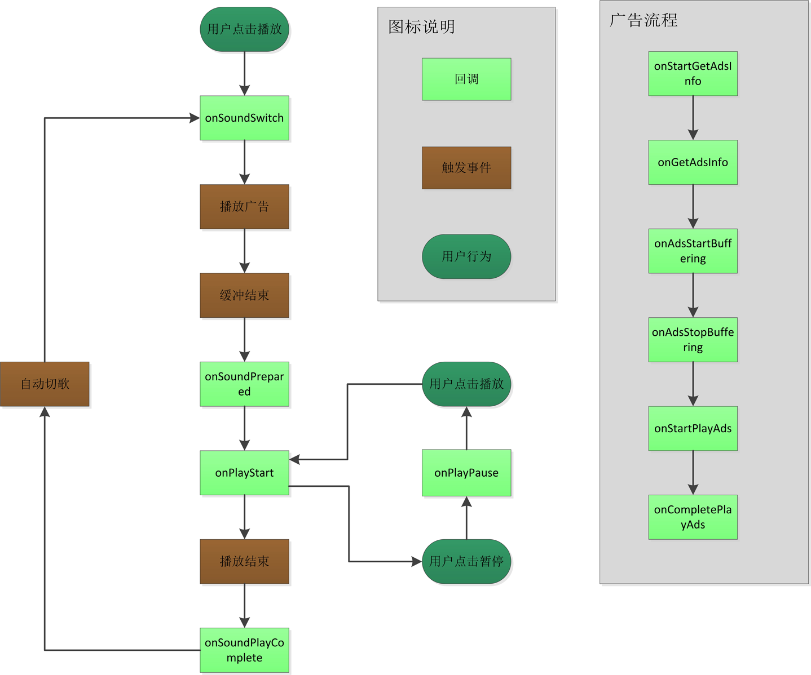
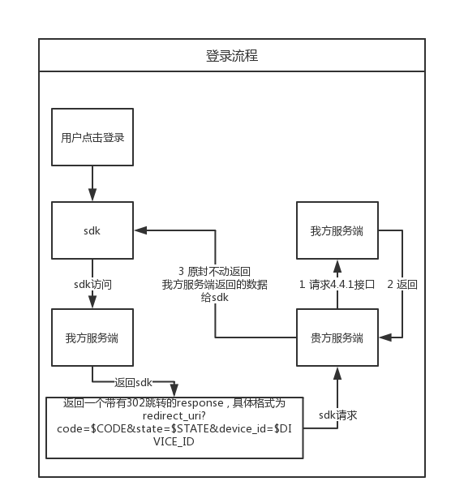

喜马拉雅Android SDK接入文档1 概述2 接入准备2.1 申请app_key、app_secret和pack_id2.2 添加SDK依赖的第三方jar包2.3 配置应用工程的AndroidManifest.xml2.3.1 添加权限2.3.2 添加meta-data2.3.3 配置播放器2.4 Model字典2.5 so文件的相关问题2.5.1 关于libxmediaplayer.so、libxmediaplayerv7.so、libxmediaplayer_x.so放置的位置 (arm64-v8a 此文件夹如果没有google上架要求不建议添加,因为会增加包的大小,)2.5.2 关于64位so的问题2.5.3 关于通过远程添加第三方库,并且库中含有so导致打包失败的问题2.5.4 so问题排查2.5.5 放置部分so2.5.6 关于上架google pay需要添加 arm64-v8a 文件夹2.6 混淆2.7 打开debug 模式3 编码接入详细介绍3.1 初始化接口（必接）3.1.1 设置app_secret(应用私钥)3.1.2 网络代理配置（可选）3.1.3 配置使用https进行访问3.2 点播数据接口3.2.1 获取喜马拉雅内容分类3.2.2 获取专辑标签或者声音标签3.2.3 根据分类和标签获取某个分类某个标签下的专辑列表（最火/最新/最多播放）3.2.4 专辑浏览，根据专辑ID获取专辑下的声音列表3.2.5 批量获取专辑列表3.2.6 根据专辑ID列表批获取量专辑更新提醒信息列表3.2.7 根据分类和标签获取热门声音列表3.2.8 批量获取声音列表3.2.9 根据上一次所听声音的id，获取此声音所在那一页的声音3.2.10 根据分类和标签获取某个分类某个标签下的专辑列表（最火/最新/最多播放） (已过时)3.2.11 根据分类和标签获取某个分类某个标签下的热门专辑列表 (已过时)3.2.12 获取某个分类下的元数据列表。3.2.13 获取某个分类的元数据属性键值组合下包含的热门专辑列表/最新专辑列表/最多播放专辑列表。3.3 直播数据接口3.3.1 获取直播省市列表3.3.2 获取直播电台3.3.3 获取直播电台某一天的节目排期表3.3.4 获取直播节目详情3.3.5 批量获取电台接口3.3.6 获取某省份城市列表。3.3.6 获取某个城市下的电台列表3.3.7 获取直播电台的分类。3.3.8 根据电台分类获取直播电台数据。3.4 榜单数据接口3.4.1 根据榜单类型获取榜单首页的榜单列表Rank3.4.2 根据rank_key获取某个榜单下的专辑列表3.4.3 根据rank_key获取某个榜单下的声音列表3.4.4 获取直播电台排行榜3.5 听单数据接口3.5.1 获取精品听单内容3.5.2 获取某个听单详情，每个听单包含听单简介信息和专辑或声音的列表3.6 焦点图数据接口3.6.1 获取榜单焦点图列表3.6.2 获取发现页推荐的焦点图列表3.6.3 获取分类推荐的焦点图列表 (已过时 请使用3.6.4)3.6.4 获取v2版本的分类推荐的焦点图列表。3.7 冷启动接口3.7.1 获取冷启动一级分类3.7.2 获取冷启动二级分类3.7.3 根据冷启动一级分类和冷启动二级分类获取相应类别下的冷启动标签列表3.7.4 提交用户感兴趣的冷启动标签3.7.5 获取用户提交的冷启动标签详情3.8 主播数据接口3.8.1 获取喜马拉雅主播分类3.8.2 获取某个分类下的主播列表3.8.3 获取主播的专辑列表3.8.4 获取某个主播的声音列表3.8.5 根据一批主播ID批量获取主播信息3.9 搜索接口3.9.1 搜索专辑3.9.2 搜索声音3.9.3 搜索直播3.9.4 获取最新热搜词3.9.5 获取某个关键词的联想词3.9.6 搜索主播3.9.7 获取指定数量直播，声音，专辑的内容。3.9.8 搜索专辑，支持的筛选条件包括专辑ID、标题、专辑所属主播ID或昵称、标签、是否付费、价格类型、分类ID或分类名等，并可指定排序字段。3.9.9 搜索声音，支持的筛选条件包括声音ID、标题、所属专辑ID、所属专辑标题、所属主播ID或昵称、标签、是否付费、分类ID或分类名等，并可指定排序字段。3.10 推荐接口3.10.1 获取运营人员在发现页配置的分类维度专辑推荐模块的列表3.10.2 获取运营人员为某个分类配置的标签维度专辑推荐模块列表3.10.3 获取某个专辑的相关推荐3.10.4 获取下载听模块的推荐下载专辑3.10.5 获取某个声音的相关推荐专辑3.10.6 获取猜你喜欢专辑3.12 定制化接口3.12.1 获取合作方自定制的专辑类听单3.12.2 获取合作方自定制的声音类听单。3.12.3 根据自定义专辑听单ID和分页参数获取自定义专辑听单内容详情，自定义专辑听单下可包含专辑或者自定义声音听单（见自运营内容网站）3.12.4 根据自定义声音听单ID和分页参数获取自定义声音听单内容详情3.12.5 根据搜索条件和分页参数，搜索所有声音听单下符合条件的声音列表3.12.6 根据声音ID和该声音所属声音听单ID获取声音详情3.12.7 根据搜索条件和分页参数，搜索所有专辑或声音听单，注意返回结果已去重。3.13 用户播放历史接口3.13.1 根据用户ID获取用户播放云历史记录3.13.2 用户上传播放云历史记录3.13.3 用户批量上传播放云历史记录3.13.4 用户批量删除播放云历史记录3.14 用户订阅接口3.14.1 获取喜马拉雅用户的动态更新的订阅专辑列表3.14.2 用户新增或取消已订阅专辑3.14.3 用户批量新增已订阅专辑3.15 喜马拉雅付费内容接口3.15.1 获取所有付费专辑3.15.2 获取付费精品分类下的标签（或者叫热词）列表3.15.3 根据付费精品分类下的标签（或者叫热词）获取热门付费专辑列表3.15.4 分页获取付费专辑下的声音列表（即分页浏览付费专辑下的声音列表）3.15.5 批量根据付费专辑ID获取付费专辑详情3.15.6 批量根据付费声音ID获取付费声音详情3.15.7 获取所有付费内容排行榜（付费专辑榜或付费声音榜）基础信息3.15.8 根据rank_key分页获取某个付费专辑排行榜下的付费专辑列表3.15.9 获取用户购买过的所有付费专辑3.15.10 根据用户ID和一批付费专辑ID获取用户对这批付费专辑的购买状态3.15.11 根据用户ID和一批付费声音ID获取用户对这批付费声音的购买状态3.15.12 根据关键词搜索付费专辑3.15.13 根据关键词搜索付费声音3.15.14 客户端下单购买3.15.14.1 客户端下单购买后播放地址更新3.15.15 第三方服务端调用下单接口然后使用SDK吊起购买页面3.15.16 部分试听声音,试听结束后回调3.15.17 根据专辑ID获取专辑下的所有声音ID列表3.15.18 检查是否有未支付的订单并取消订单3.15.19 取消订单3.15.203.16 用户相关接口3.16.1 根据用户ID获取用户基本信息3.16.2 根据用户ID获取用户画像资料3.17 测试付费相关内容需要注意的事项3.18 服务端下单确单4 播放器说明4.1 播放器概述4.2 播放器环境搭建4.3 播放器状态介绍4.4 播放器初始化和释放4.5 通过播放器播放声音4.5.1 playLiveRadioForSDK函数源代码4.6 播放器控制4.7 播放器回调4.8 播放器通知栏使用4.9 拼接Track信息进行播放4.9.1 播放已经下载好的声音4.9.2 播放在线声音(声音资源是第三方的)4.9.3 播放在线声音(声音资源是喜马拉雅的)4.9.4 额外展示使用参数4.10 播放器初始化完成回调4.11 播放器加载播放音质策略4.12 不希望记住播放记录(即每次播放从头开始播放)4.13 关于贵方的智能硬件设备是x86平台的问题4.14 贵方同时使用了自己的播放器和我们的播放器,线控被占用的问题4.15 不希望SDK处理AudioFocus4.16 播放缓存设置缓存数量4.17 是否使用防劫持方案4.18 倍速播放4.19 定时关闭4.20 是否处理因为网络断开导致的不能播放问题5 错误处理5.1 HTTP响应码5.2 错误码6 音频下载功能6.1 概述6.2 接口6.2.1 初始化6.2.2 下载接口6.2.3 暂停下载接口6.2.4 恢复下载接口6.2.5 取消下载接口6.2.6 获取下载状态接口6.2.7 正在下载或已下载的音频列表6.2.8 清理下载接口6.2.9 获取下载文件已占用的磁盘空间6.2.10 是否有正在下载的任务6.2.11 设置网络代理6.2.12 释放6.2.13 更改保存的地址6.2.13 更改保存的地址 并转移已经下载,未下载,正在下载的音频6.2.14 更换顺序6.2.15 获得下载的音频根据album进行分组6.2.16 album里面是否有正在下载的track6.2.17 添加全局的添加下载的listener6.3 工具方法6.3.1 ComparatorUtil.java7 登录授权SDK登录流程简图7.1 manifest 需要声明OAuth2 Android SDK中的 Activity：<br>7.2 使用回调确定是否有需要登录授权的情况7.3 调用登录授权接口7.4 将回调结果设置到SDK内(!!! 重要)7.5 二维码登录7.5.1 客户端请求获取二维码图片7.5.2 查询登录状态7.6 退出登录7.7 服务端实现 redirect_url (必须实现 重要!!!)7.8 第三方使用third_uid和third_token换取授权后的access_token8 SDK相关问题反馈
本文档面向Android开发者。 本文档用于指导开发者快速接入喜马拉雅SDK，本SDK为Android应用提供获取点播、直播内容等功能。
在喜马拉雅开放平台前台网站申请创建应用以获取app_key、Papp_secret和pack_id，申请创建流程可以参考喜马拉雅开放平台接入流程
SDK在实现的过程中，使用了某些第三方的jar包，贵方App集成SDK时，需要同时将以下jar包拷贝到项目的libs目录下，否则SDK不能正常运行。 里面的包以最新的sdk包内的jar为准
xxxxxxxxxx// SDK在解析请求返回的JSON数据时用到api 'com.google.code.gson:gson:2.8.1'// SDK联网框架使用okhttpapi 'com.squareup.okhttp3:okhttp:3.11.0'// SDK联网框架使用okhttpapi 'com.squareup.okio:okio:1.15.0'// v4包api 'com.android.support:support-v4:28.0.0'xxxxxxxxxx<!--连接网络--><uses-permission android:name="android.permission.INTERNET" /><!--debug环境下将播放中产生的log输出到外置sdk,方便查询问题--><uses-permission android:name="android.permission.WRITE_EXTERNAL_STORAGE" /><!--用于管理监听网络状态的变化--><uses-permission android:name="android.permission.ACCESS_WIFI_STATE" /><!--用于管理监听网络状态的变化--><uses-permission android:name="android.permission.ACCESS_NETWORK_STATE" /><!--用于管理监听网络状态的变化--><uses-permission android:name="android.permission.CHANGE_NETWORK_STATE" /><!--获取电话的状态,在打电话的时候暂停播放--><uses-permission android:name="android.permission.READ_PHONE_STATE" /><!--获取电话的状态,在打电话的时候暂停播放(非必须)--><uses-permission android:name="android.permission.PROCESS_OUTGOING_CALLS" /><!--target >=28 需要设置此权限 --><uses-permission android:name="android.permission.FOREGROUND_SERVICE"/>xxxxxxxxxx<meta-data android:name="app_key" android:value="这里替换成你申请到的app_key"/><meta-data android:name="pack_id" android:value="这里替换成你申请到的pack_id"/>注意上面的app_key和pack_id的值需要替换。app_secret设置 参见3.1.1
tips:
x如果不希望在AndroidManifest 里面进行设置,需要在Application中初始化CommonRequest ,请按照如下代码进行设置CommonRequest mXimalaya = CommonRequest.getInstanse();mXimalaya.setAppkey(appKey);mXimalaya.setPackid(packId);mXimalaya.init(this ,appSecret);见章节4
SDK请求接口的返回的数据Model描述见Model层.md。
如果贵方中有arm64的文件夹可以将其删除掉(有其他第三方的so也可以删除掉因为armeabi 是兼容arm64的) 如果贵方坚持需要64位so 可以将SDK中arm64-v8a 文件夹下的so放到贵方的arm64-v8a
在build.gradle 的android栏中添加如下代码
xxxxxxxxxxandroid { ... defaultConfig { ... ndk { // 设置支持的SO库架构 abiFilters 'armeabi'/*, 'x86'*///, 'armeabi-v7a', 'x86_64', 'arm64-v8a' } }}在gradle中是否添加了so的加载路径 如果按照上面的操作没有解决问题可以将打出的包重命名为.zip 然后查看libs文件夹 看是否是否还有其他的so so很重要的放置原则就是每个版本文件夹的so的个数要一样(我们的so放置做过优化,只要符合上面我们的so的放置规则,就不用按照此规则check我们的so)
之前的配置的so规则不用改变,新加一个文件夹 arm64-v8a ,将SDK里面的 arm64-v8a 文件夹拷贝项目当中
xxxxxxxxxx-dontwarn okio.**-keep class okio.** { *;}-dontwarn okhttp3.**-keep class okhttp3.** { *;}-dontwarn com.google.gson.**-keep class com.google.gson.** { *;}-dontwarn android.support.**-keep class android.support.** { *;}-dontwarn com.ximalaya.ting.android.player.**-keep class com.ximalaya.ting.android.player.** { *;}-dontwarn com.ximalaya.ting.android.opensdk.**-keep interface com.ximalaya.ting.android.opensdk.** {*;}-keep class com.ximalaya.ting.android.opensdk.** { *; }ConstantsOpenSdk.isDebug = true;
接口签名：
xxxxxxxxxxpublic void init(Context context, String appsecret)接口说明：
用于初始化SDK(以下无特殊说明 SDK 代表的是Ximalaya Android SDK)，在使用SDK接口之前必须调用一次该方法，否则SDK处于未初始化状态，无法使用其他接口。
参数说明：
参考代码：
xxxxxxxxxxCommonRequest.getInstanse().init(context, appSecret);接口签名：
xxxxxxxxxxpublic void setHttpConfig(Config config)接口说明：
用于设置SDK联网配置。当不需要网络代理时，设置为null即可。
参数说明：
Config是SDK联网配置，Config的所有成员变量如下：
| 参数名 | 参数类型 | 参数说明 |
|---|---|---|
| useProxy | Boolean | 使用代理开关 |
| proxyHost | String | 代理服务器ip地址 |
| proxyPort | Int | 代理服务器端口 |
| authorization | String | 代理服务器授权信息 |
| useCache | Boolean | 使用缓存开关 |
| connectionTimeOut | Int | 连接超时默认10s |
| readTimeOut | Int | 读取超时默认10s |
| writeTimeOut | Int | 写入超时时间 默认10s |
| property | Map<String, String> | 请求头 |
参考代码：
xxxxxxxxxxConfig config = newConfig();config.useProxy = true; // 若想使用代理，必须配置此项为true，否则代理配置被忽略config.proxyHost = "192.168.3.1";config.proxyPort = 1080;config.connectionTimeOut = 3000;config.readTimeOut = 3000;config.writeTimeOut = 3000;CommonRequest.getInstanse().setHttpConfig(config);xxxxxxxxxxCommonRequest.getInstanse().setUseHttps(true);下面这个host不支持使用https进行访问adse.ximalaya.comxxxxxxxxxxCommonRequest.getInstanse().mNoSupportHttps.add("http://www.baidu.com/request")接口签名：
xxxxxxxxxxpublic static void getCategories(final Map<String,String> specificParams, final IDataCallBack<CategoryList> callback)接口说明：
此接口用于获取点播资源的内容分类，如：“有声小说”、“相声评书”等。
参数说明：
参考代码：
xxxxxxxxxxMap<String, String> map = new HashMap<String, String>();CommonRequest.getCategories(map, newIDataCallBack<CategoryList>() { public void onSuccess(CategoryList object) { } public void onError(int code, String message) { }});接口签名：
xxxxxxxxxxpublic static void getTags(Map<String, String> specificParams, final IDataCallBack<TagList> callback)参数说明
specificParams：字段介绍如下
| 字段名 | 类型 | 必填 | 描述 |
|---|---|---|---|
| category_id | Int | 是 | 分类ID，指定分类，为0时表示热门分类 |
| type | Int | 是 | 指定查询的是专辑标签还是声音标签，0-专辑标签，1-声音标签 |
callback：回调接口，成功则返回TagList（字段描述见Model层.md）对象，失败则返回错误原因。
参考代码：
xxxxxxxxxxMap<String, String> map = new HashMap<String, String>();map.put(DTransferConstants.CATEGORY_ID, categoryId);map.put(DTransferConstants.TYPE, 0);CommonRequest.getTags(map, new IDataCallBack<TagList>());接口签名：
xxxxxxxxxxpublic static void getAlbumList(Map<String, String> specificParams, final IDataCallBack<AlbumList> callback)参数说明
pecificParams: 字段介绍如下
| 字段名 | 类型 | 必填 | 描述 |
|---|---|---|---|
| category_id | Int | 是 | 分类ID，指定分类，为0时表示热门分类 |
| tag_name | String | 否 | 分类下对应的专辑标签，不填则为热门分类 |
| calc_dimension | Int | 是 | 计算维度，现支持最火（1），最新（2），经典或播放最多（3） |
| page | Int | 否 | 返回第几页，必须大于等于1，不填默认为1 |
| count | Int | 否 | 每页多少条，默认20，最多不超过200 |
callback:回调接口，成功则返回AlbumList对象，失败则返回错误原因
参考代码：
xxxxxxxxxxMap<String ,String> map = new HashMap<String, String>();map.put(DTransferConstants.CATEGORY_ID ,"0");map.put(DTransferConstants.CALC_DIMENSION ,"1");CommonRequest.getAlbumList(map, new IDataCallBack<AlbumList>());接口签名：
xxxxxxxxxxpublic static void getTracks(Map<String, String> specificParams, final IDataCallBack<TrackList> callback)接口说明：
此接口用于返回专辑下的声音列表
参数说明：
specificParams：字段介绍如下
| 字段名 | 类型 | 必填 | 描述 |
|---|---|---|---|
| album_id | Int | 是 | 专辑ID |
| sort | String | 否 | sort String 否 "asc"表示喜马拉雅正序，"desc"表示喜马拉雅倒序，"time_asc"表示时间升序，"time_desc"表示时间降序，默认为"asc" |
| page | Int | 否 | 当前第几页，不填默认为1 |
| count | Int | 否 | 每页多少条，默认20，最多不超过200 |
callback：回调接口，成功则返回TrackList（字段描述见Model层.md）对象，失败则返回错误原因。
参考代码
xxxxxxxxxxMap<String, String> map = new HashMap<String, String>();map.put(DTransferConstants.ALBUM_ID, mAlbumId);map.put(DTransferConstants.SORT, "asc");map.put(DTransferConstants.PAGE, mPage);CommonRequest.getTracks(map, new IDataCallBack<TrackList>();注意：如果要改变返回数据的每页大小，可以通过如下接口设置,此接口是全局性接口 ,凡是设置需要设置count的地方都可以使用该方法进行设置,参数设置的count优先级比此方法的高
xxxxxxxxxxCommonRequest.getInstanse().setDefaultPagesize(int size)接口签名：
xxxxxxxxxxpublic static void getBatch(Map<String, String> specificParams, final IDataCallBack<BatchAlbumList> callback)接口说明：
此接口用于批量返回专辑列表
参数说明：
specificParams：字段介绍如下
| 字段名 | 类型 | 必填 | 描述 |
|---|---|---|---|
| ids | String | 是 | 专辑ID列表，用英文逗号分隔，比如"1000,1010" 最大ID数量为200个，超过200的ID将忽略 |
callback：回调接口，成功则返回BatchAlbumList（字段描述见Model层.md）对象，失败则返回错误原因。
参考代码
xxxxxxxxxxString album_ids = "1000,1010";Map<String, String> map = new HashMap<String, String>();map.put(DTransferConstants.ALBUM_IDS, album_ids);CommonRequest.getBatch(map, new IDataCallBack<BatchAlbumList>());接口签名：
xxxxxxxxxxpublic static void getUpdateBatch(Map<String, String> specificParams, final IDataCallBack<UpdateBatchList> callback)参数说明：
specificParams：字段介绍如下
| 字段名 | 类型 | 必填 | 描述 |
|---|---|---|---|
| ids | string | 是 | 专辑ID列表 |
callback：回调接口，成功则返回UpdateBatchList（字段描述见Model层.md）对象，失败则返回错误原因
参考代码
xxxxxxxxxxString album_ids = "albumid1,albumid2,albumid3…";Map<String, String> map = new HashMap<String, String>();map.put(DTransferConstants.ALBUM_IDS, album_ids);CommonRequest.getUpdateBatch(map, new IDataCallBack<UpdateBatchList>());接口签名：
xxxxxxxxxxpublic void getHotTracks(final Map<String, Object> specificParams, final IDataCallBack<TrackHotList> callback)接口说明：
此接口用于获取某个分类某个声音下的热门声音列表
参数说明：
specificParams：字段介绍如下
| 字段名 | 类型 | 必填 | 描述 |
|---|---|---|---|
| category_id | Int | 是 | 分类ID，指定分类 |
| tag_name | String | 否 | 分类下对应声音标签，不填则为热门分类 |
| page | Int | 否 | 返回第几页，必须大于等于1，不填默认为1 |
| count | Int | 否 | 每页多少条，默认20，最多不超过200 |
callback：回调接口，成功则返回TrackHotList（字段描述见Model层.md）对象，失败则返回错误原因。
参考代码
xxxxxxxxxxMap<String, String>map = new HashMap<String, String>();map.put(DTransferConstants.CATEGORY_ID, mCategoryId);map.put(DTransferConstants.TAG_NAME, mTagName);map.put(DTransferConstants.PAGE, mPageNum);CommonRequest.getHotTracks(map, newIDataCallBack<TrackHotList>());注意：对于返回的每页的条数，可以通过如下接口设置,此接口是全局性接口 ,凡是设置需要设置count的地方都可以使用该方法进行设置,参数设置的count优先级比此方法的高
xxxxxxxxxxCommonRequest.getInstanse().setDefaultPagesize(int size)接口签名：
xxxxxxxxxxpublic static void getBatchTracks(Map<String,String> specificParams, final IDataCallBack<BatchTrackList> callback)接口说明：
此接口用于批量获取声音
参数说明：
specificParams：字段介绍如下
| 字段名 | 类型 | 必填 | 描述 |
|---|---|---|---|
| ids | String | 是 | 声音ID列表 最大ID数量为200个，超过200的ID将忽略 |
callback：回调接口，成功则返回BatchTrackList（字段描述见Model层.md）对象，失败则返回错误原因。
参考代码
xxxxxxxxxxString track_ids = "替换成用英文逗号分隔的声音ID";Map<String, String> map = new HashMap<String, String>();map.put(DTransferConstants.TRACK_IDS, track_ids);CommonRequest.getBatchTracks(map, newIDataCallBack<BatchTrackList>()接口签名：
xxxxxxxxxxpublic static void getLastPlayTracks(Map<String,String> specificParams, final IDataCallBack<LastPlayTrackList> callback)参数说明：
specificParams：字段介绍如下
| 字段名 | 类型 | 必填 | 描述 |
|---|---|---|---|
| album_id | Long | 是 | 专辑id |
| track_id | Long | 是 | 声音id |
| count | int | 否 | 每页大小，范围为[1,200]，默认为20 |
| sort | String | 否 | 返回结果排序方式： "asc" - 喜马拉雅正序，"desc" - 喜马拉雅倒序，默认为"asc" |
| contains_paid | bool | 否 | 是否是付费声音 (如果是付费相关的专辑调用此函数需要设置contain_paid 为true) |
callback：回调接口，成功则返回LastPlayTrackList（字段描述见Model层.md）对象，失败则返回错误原因
参考代码：
xxxxxxxxxxMap<String, String> map = new HashMap<String, String>();map.put(DTransferConstants.ALBUM_ID, album_id);map.put(DTransferConstants.TRACK_ID, track_id);CommonRequest.getLastPlayTracks(map, new IDataCallBack<LastPlayTrackList>());已过时)接口签名：
xxxxxxxxxxpublic static void getUpToDateAlbums(Map<String, String> specificParams, final IDataCallBack<AlbumList> callback)参数说明
pecificParams: 字段介绍如下
| 字段名 | 类型 | 必填 | 描述 |
|---|---|---|---|
| category_id | Int | 是 | 分类ID，指定分类，为0时表示热门分类 |
| tag_name | String | 否 | 分类下对应的专辑标签，不填则为热门分类 |
| calc_dimension | Int | 是 | 计算维度，现支持最火（1），最新（2），经典或播放最多（3） |
| page | Int | 否 | 返回第几页，必须大于等于1，不填默认为1 |
| count | Int | 否 | 每页多少条，默认20，最多不超过200 |
参考代码：
xxxxxxxxxxCommonRequest.getUpToDateAlbums(Map<String, String> specificParams, new IDataCallBack<AlbumList>());已过时)接口签名：
xxxxxxxxxxpublic static void getAlbums(Map<String, String> specificParams, final IDataCallBack<AlbumList> callback)接口说明：
接口用于返回热门专辑列表
参数说明：
specificParams：字段介绍如下
| 字段名 | 类型 | 必填 | 描述 |
|---|---|---|---|
| category_id | Int | 是 | 分类ID，指定分类 |
| tag_name | String | 否 | 分类下对应专辑标签，不填则为热门分类 |
| page | Int | 否 | 返回第几页，必须大于等于1，不填默认为1 |
callback：回调接口，成功则返回AlbumList（字段描述见Model层.md）对象，失败则返回错误原因。
参考代码
xxxxxxxxxxMap<String, String> map = new HashMap<String, String>();map.put(DTransferConstants.CATEGORY_ID, mCategoryId);map.put(DTransferConstants.TAG_NAME, mTagName);map.put(DTransferConstants.PAGE, mPageNum);CommonRequest.getAlbums(map, new IDataCallBack<AlbumList>());注意：如果要改变返回数据的每页大小，可以通过如下接口设置,此接口是全局性接口 ,凡是设置需要设置count的地方都可以使用该方法进行设置,参数设置的count优先级比此方法的高
xxxxxxxxxxCommonRequest.getInstanse().setDefaultPagesize(int size)接口签名：
xxxxxxxxxxpublic static void getMetadataList(Map<String, String> specificParams, final IDataCallBack<MetaDataList> callback)接口说明：
获取某个分类下的元数据列表。
参数说明：
specificParams：字段介绍如下
| 字段名 | 类型 | 必填 | 描述 |
|---|---|---|---|
| category_id | Int | 是 | 分类ID，指定分类 |
callback：回调接口，成功则返回MetaDataList（字段描述见Model层.md）对象，失败则返回错误原因。
参考代码
xxxxxxxxxxMap<String, String> map = new HashMap<String, String>();map.put(DTransferConstants.CATEGORY_ID, mCategoryId);CommonRequest.getMetadataList(map, new IDataCallBack<MetaDataList>());实例
对应喜马拉雅如下功能： 打开喜马拉雅进入首页，选择分类Tab，然后点击儿童分类，再选择全部出现如下
接口签名：
xxxxxxxxxxpublic static void getMetadataAlbumList(Map<String, String> specificParams, final IDataCallBack<AlbumList> callback)接口说明：
获取某个分类的元数据属性键值组合下包含的热门专辑列表/最新专辑列表/最多播放专辑列表。
参数说明：
specificParams：字段介绍如下
| 字段名 | 类型 | 必填 | 描述 |
|---|---|---|---|
| category_id | Int | 是 | 分类ID，指定分类，为0时表示热门分类 |
| metadata_attributes | String | 否 | 元数据属性列表：在/metadata/list接口得到的结果中，取不同元数据属性的attr_key和atrr_value组成任意个数的key-value键值，格式如：attr_key1:attr_value1;attr_key2:attr_value2;attr_key3:attr_value3 |
| calc_dimension | Int | 是 | 计算维度，现支持最火（1），最新（2），经典或播放最多（3） |
| page | Int | 否 | 返回第几页，必须大于等于1，不填默认为1 |
| count | Int | 否 | 每页多少条，默认20，最多不超过200 |
callback：回调接口，成功则返回AlbumList（字段描述见Model层.md）对象，失败则返回错误原因。
参考代码
xxxxxxxxxxMap<String, String> map = new HashMap<String, String>();map.put(DTransferConstants.CALC_DIMENSION, 1 + "");map.put(DTransferConstants.CATEGORY_ID, 3+ "");map.put(DTransferConstants.METADATA_ATTRIBUTES, "97:穿越");CommonRequest.getMetadataAlbumList(map, new IDataCallBack<AlbumList>());接口签名：
xxxxxxxxxxpublic static void getProvinces(Map<String, String> specificParams, final IDataCallBack<ProvinceList> callback)接口说明：
此接口用于获取直播省市列表
参数说明：
参考代码：
xxxxxxxxxxMap<String, String> map = new HashMap<String, String>();CommonRequest.getProvinces(map, new IDataCallBack<ProvinceList>());接口签名：
xxxxxxxxxxpublic static void getRadios(Map<String, String> specificParams, final IDataCallBack<RadioList> callback)接口说明：
此接口用于返回直播电台列表
参数说明：
specificParams：字段介绍如下
| 字段名 | 类型 | 必填 | 描述 |
|---|---|---|---|
| radio_type | Int | 是 | 电台类型：1-国家台，2-省市台，3-网络台 |
| province_code | Int | 否 | 省份代码，radio_type为2时不能为空 |
| page | Int | 否 | 返回第几页，必须大于等于1，不填默认为1 |
callback：回调接口，成功则返回RadioList（字段描述见Model层.md）对象，失败则返回错误原因。
参考代码
xxxxxxxxxxMap<String, String> map = new HashMap<String, String>();map.put(DTransferConstants.RADIOTYPE, 2);map.put(DTransferConstants.PROVINCECODE, 310000);map.put(DTransferConstants.PAGE, mPageNum);CommonRequest.getRadios(map, newIDataCallBack<RadioList>());注意：对于返回的每页的条数，可以通过如下接口设置,此接口是全局性接口 ,凡是设置需要设置count的地方都可以使用该方法进行设置,参数设置的count优先级比此方法的高
xxxxxxxxxxCommonRequest.getInstanse().setDefaultPagesize(int size)接口签名：
xxxxxxxxxxpublic static void getSchedules(Map<String, String> specificParams, final IDataCallBack<ScheduleList> callback)接口说明：
此接口用于返回直播电台某一天的节目排期表
参数说明：
specificParams：字段介绍如下
| 字段名 | 类型 | 必填 | 描述 |
|---|---|---|---|
| radio_id | Int | 是 | 直播电台ID |
| weekday | Int | 否 | 表示星期几，不填则取今天的星期。0-星期天，1-星期一，2-星期二，3-星期三，4-星期四，5-星期五，6-星期六 |
callback：回调接口，成功则返回ScheduleList（字段描述见Model层.md）对象，失败则返回错误原因。
参考代码
xxxxxxxxxxMap<String, String> map = new HashMap<String, String>();map.put(DTransferConstants.RADIOID, 61);map.put(DTransferConstants.WEEKDAY, Constants.WeekDay.MONDAY);CommonRequest.getSchedules(map, newIDataCallBack<ScheduleList>());接口签名：
xxxxxxxxxxpublic static void getProgram(Map<String, String> specificParams, final IDataCallBack<ProgramList> callback)接口说明：
此接口用于返回所选直播节目的详情
参数说明：
specificParams：字段介绍如下
| 字段名 | 类型 | 必填 | 描述 |
|---|---|---|---|
| radio_id | Int | 是 | 直播电台ID |
callback：回调接口，成功则返回ProgramList（字段描述见Model层.md）对象，失败则返回错误原因。
参考代码
xxxxxxxxxxMap<String, Object> map = new HashMap<String, Object>();map.put(DTransferConstants.RADIOID, 61);CommonRequest.getProgram(map, new IDataCallBack<ProgramList>());接口签名：
xxxxxxxxxxpublic static void getRadiosByIds(Map<String, String> specificParams, final IDataCallBack<RadioListById> callback)参数说明：
specificParams：字段介绍如下
| 字段名 | 类型 | 必填 | 描述 |
|---|---|---|---|
| ids | String | 是 | 电台ID列表，以英文逗号分隔，比如"100,101,102" |
callback：回调接口，成功则返回RadioListById（字段描述见Model层.md）对象，失败则返回错误原因
参考代码
xxxxxxxxxxString ids = "100,101,102";Map<String, String> map = new HashMap<String, String>();map.put(DTransferConstants.RADIO_IDS, radio_ids);CommonRequest.getRadiosByIds(map, new IDataCallBack<RadioListById >());接口签名：
xxxxxxxxxxpublic static void getCitys(final Map<String ,String> params , IDataCallBack<CityList> callBack)参数说明：
specificParams：字段介绍如下
| 字段名 | 类型 | 必填 | 描述 |
|---|---|---|---|
| province_code | Int | 是 | 省份code (国家行政规划的省代码) |
callback：回调接口，成功则返回CityList（字段描述见Model层.md）对象，失败则返回错误原因
参考代码：
xxxxxxxxxxMap<String, String> map = new HashMap<String, String>();map.put(DTransferConstants.PROVINCECODE, province_code);CommonRequest.getCitys(map, new IDataCallBack<CityList>());接口签名：
xxxxxxxxxxpublic static void getRadiosByCity(Map<String, String> specificParams, final IDataCallBack<RadioList> callback) {参数说明：
specificParams：字段介绍如下
| 字段名 | 类型 | 必填 | 描述 |
|---|---|---|---|
| city_code | Int | 是 | 城市code(国家行政规划的城市代码) |
| page | Int | 否 | 返回第几页，必须大于等于1，不填默认为1 |
| count | Int | 否 | 每页多少条，默认20，最多不超过100 |
callback：回调接口，成功则返回RadioList（字段描述见Model层.md）对象，失败则返回错误原因
参考代码：
xxxxxxxxxxMap<String, String> map = new HashMap<String, String>();map.put(DTransferConstants.CITY_CODE, city_code);CommonRequest.getRadiosByCity(map, new IDataCallBack<RadioList>());接口签名：
xxxxxxxxxxpublic static void getRadioCategory(Map<String, String> specificParams, final IDataCallBack<RadioCategoryList> callback) {参数说明：
参考代码：
xxxxxxxxxxMap<String, String> map = new HashMap<String, String>();CommonRequest.getRadioCategory(map, new IDataCallBack<RadioCategoryList>() { public void onSuccess(RadioCategoryList object) { } public void onError(int code, String message) { }});接口签名：
xxxxxxxxxxpublic static void getRadiosByCategory(Map<String, String> specificParams, final IDataCallBack<RadioListByCategory> callback) {参数说明：
specificParams：字段介绍如下
| 字段名 | 类型 | 必填 | 描述 |
|---|---|---|---|
| radio_category_id | Int | 是 | 直播分类ID |
| page | Int | 否 | 返回第几页，必须大于等于1，不填默认为1 |
| count | Int | 否 | 每页多少条，默认20，最多不超过200 |
callback：回调接口，成功则返回RadioListByCategory（字段描述见Model层.md）对象，失败则返回错误原因
参考代码：
xxxxxxxxxxMap<String ,String> maps = new HashMap<String, String>();maps.put(DTransferConstants.RADIO_CATEGORY_ID ,"2");CommonRequest.getRadiosByCategory(maps, new IDataCallBack<RadioListByCategory>() { public void onSuccess(RadioListByCategory object) { System.out.println("radioList = " + object); } public void onError(int code, String message) { }});接口签名：
xxxxxxxxxxpublic static void getRankList(Map<String, String> specificParams, final IDataCallBack<RankList> callback)参数说明：
specificParams：字段介绍如下
| 字段名 | 类型 | 必填 | 描述 |
|---|---|---|---|
| rank_type | Int | 是 | 榜单类型，1-节目榜单 |
callback：回调接口，成功则返回RankList对象，失败则返回错误原因
返回的Rank对象介绍如下 在使用其他榜单接口时一定要仔细看下此model的各个值的属性
| 字段名 | 类型 | 描述 |
|---|---|---|
| rank_key | String | 用于获取具体榜单内容的key，它作为入参用于获取具体某个排行榜内容 |
| kind | String | 固定值"rank" |
| rank_title | String | 榜单标题 |
| rank_type | Int | 榜单类型，1-节目榜单 |
| rank_sub_title | String | 榜单副标题 |
| rank_period | Int | 榜单计算周期，单位为天 |
| rank_period_type | String | 榜单计算周期类型，比如“日榜”、“周榜”等 |
| rank_item_num | Int | 该榜单内条目总数，比如100 |
| rank_order_num | Int | 该榜单相对其他榜单的排序值，值越小越靠前 |
| cover_url | String | 榜单封面图URL |
| category_id | Long | 榜单所属分类ID |
| rank_content_type | String | 榜单内容类型，album-专辑，track-声音 |
| rank_first_item_id | Long | 榜单内排名第一的条目的ID |
| rank_first_item_title | String | 榜单内排名第一的条目的标题 |
| index_rank_items | Array | 榜单首页显示的条目列表,对应RankItem |
参考代码：
xxxxxxxxxxMap<String, String> map = new HashMap<String, String>();map.put(DTransferConstants.RANK_TYPE, rank_type);CommonRequest.getRankList(map, new IDataCallBack<RankList>()
接口签名：
xxxxxxxxxx// getRankAlbumList 接口已失效 ,请使用新接口 ,新接口中传入的rank_list_id 是榜单列表的id ,Rank model中的 rankListIdpublic static void getRankAlbumListNew(Map<String, String> specificParams,final IDataCallBack<RankAlbumList> callback)参数说明：
specificParams: 字段介绍如下
| 字段名 | 类型 | 必填 | 描述 |
|---|---|---|---|
| rank_list_id | String | 是 | 用于获取具体榜单列表的id,可通过3.4.1获得 |
| page | Int | 否 | 返回第几页，必须大于等于1，不填默认为1 |
| count | Int | 否 | 每页的大小 ，范围为[1,200]，默认为20 |
callback:回调接口，成功则返回RankAlbumList（字段描述见Model层.md）对象，失败则返回错误原因
参考代码：
xxxxxxxxxxMap<String, String> map = new HashMap<String, String>();map.put(DTransferConstants.RANK_KEY, rank_key);CommonRequest.getRankAlbumList(map, new IDataCallBack<RankAlbumList>());接口签名：
xxxxxxxxxxpublic static void getRankTrackList(Map<String, String> specificParams,final IDataCallBack<RankTrackList> callback)参数说明：
specificParams：字段介绍如下
| 字段名 | 类型 | 必填 | 描述 |
|---|---|---|---|
| rank_key | String | 是 | 用于获取具体榜单内容的key |
| page | Int | 否 | 返回第几页，必须大于等于1，不填默认为1 |
rank_key为通过3.4.1接口获取
参考代码：
xxxxxxxxxxMap<String, String> map = new HashMap<String, String>();map.put(DTransferConstants.RANK_KEY, rank_key);CommonRequest.getRankTrackList(map, new IDataCallBack<RankTrackList>());接口签名：
xxxxxxxxxxpublic static void getRankRadios(Map<String, String> specificParams, final IDataCallBack<RadioList> callback)参数说明：
specificParams：字段介绍如下
| 字段名 | 类型 | 必填 | 描述 |
|---|---|---|---|
| radio_count | Int | 是 | 需要获取排行榜中的电台数目。 |
callback：回调接口，成功则返回RadioList对象，失败则返回错误原因
参考代码：
xxxxxxxxxxMap<String, String> map = new HashMap<String, String>();map.put(DTransferConstants.RADIO_COUNT, 10);CommonRequest.getRankRadios(map, new IDataCallBack<RadioList>());接口签名：
xxxxxxxxxxpublic static void getColumnList(Map<String, String> specificParams, final IDataCallBack<ColumnList> callback)参数说明：
specificParams：字段介绍如下
| 字段名 | 类型 | 必填 | 描述 |
|---|---|---|---|
| page | Int | 否 | 返回第几页，必须大于等于1，不填默认为1 |
callback：回调接口，成功则返回ColumnList（字段描述见Model层.md）对象，失败则返回错误原因
参考代码：
xxxxxxxxxxMap<String, String> map = new HashMap<String, String>();CommonRequest.getColumnList(map, new IDataCallBack<ColumnList>());接口签名：
xxxxxxxxxxpublic static void getComlumnDetail( Map<String, String> specificParams, final IDataCallBack<ColumnDetail> callback)参数说明：
specificParams：字段介绍如下
| 字段名 | 类型 | 必填 | 描述 |
|---|---|---|---|
| id | Int | 是 | 听单ID |
callback：回调接口，成功则返回ColumnDetail（字段描述见Model层.md）对象，失败则返回错误原因
注意：听单会返回声音列表或者专辑列表，需要通过ColumnDetail中的column_content_type字段判断是声音列表还是专辑列表
参考代码：
xxxxxxxxxxMap<String, String> map = new HashMap<String, String>();map.put(DTransferConstants.ID ,id);CommonRequest.getComlumnDetail(map, new IDataCallBack<ColumnDetail>() { publicvoid onSuccess(ColumnDetail object) { /** 专辑*/ if(object.getColumnContentType() == 1) { ColumnDetailAlbum albumList = (ColumnDetailAlbum) object; } /** 声音*/ elseif(object.getColumnContentType() == 2) { ColumnDetailTrack trackList = (ColumnDetailTrack) object; } } publicvoid onError(int code, String message) { } });接口签名：
xxxxxxxxxxpublic static void getRankBannerList( Map<String, String> specificParams, final IDataCallBack<RankBannerList> callback)参数说明：
specificParams：字段介绍如下
| 字段名 | 类型 | 必填 | 描述 |
|---|---|---|---|
| id | Int | 是 | 听单ID |
callback：回调接口，成功则返回RankBannerList（字段描述见Model层.md）对象，失败则返回错误原因
参考代码：
xxxxxxxxxxMap<String, String> map = new HashMap<String, String>();map.put(DTransferConstants.ID ,id);CommonRequest.getRankBannerList(map, new IDataCallBack<RankBannerList>());接口签名：
xxxxxxxxxxpublic static void getDiscoveryBannerList( Map<String, String> specificParams, final IDataCallBack<DiscoveryBannerList> callback)参数说明：
specificParams：字段介绍如下
| 字段名 | 类型 | 必填 | 描述 |
|---|---|---|---|
| channel | String | 是 | app的渠道号（对应渠道焦点图配置） |
| app_version | String | 是 | app版本号 |
| image_scale | Int | 是 | 控制焦点图图片大小参数，scale=2为iphone适配类型，scale=3为iphone6适配机型，对于Android一般设为2 |
callback：回调接口，成功则返回DiscoveryBannerList（字段描述见Model层.md）对象，失败则返回错误原因
参考代码：
xxxxxxxxxxMap<String, String> map = new HashMap<String, String>();map.put(DTransferConstants.CHANNEL ,"");map.put(DTransferConstants.APP_VERSION ,"");map.put(DTransferConstants.IMAGE_SCALE ,"2");CommonRequest.getDiscoveryBannerList(map, new IDataCallBack<DiscoveryBannerList>());接口签名：
xxxxxxxxxxpublic static void getCategoryBannerList( Map<String, String> specificParams, final IDataCallBack<CategoryBannerList> callback)参数说明：
specificParams：字段介绍如下
| 字段名 | 类型 | 必填 | 描述 |
|---|---|---|---|
| channel | String | 否 | app的渠道号（对应渠道焦点图配置），默认值为“and-f5” |
| app_version | String | 否 | app版本号，默认值为“4.3.2.2” |
| image_scale | Int | 否 | 控制焦点图图片大小参数，scale=2为iphone适配类型，scale=3为iphone6适配机型；机型为android时的一般设置scale=2。默认值为“2” |
| category_id | Int | 是 | 分类ID |
| content_type | String | 是 | 内容类型：暂时仅专辑(album) |
callback：回调接口，成功则返回CategoryBannerList（字段描述见Model层.md）对象，失败则返回错误原因
参考代码：
xxxxxxxxxxMap<String, String> map = new HashMap<String, String>();map.put(DTransferConstants.CHANNEL ,"");map.put(DTransferConstants.APP_VERSION ,"");map.put(DTransferConstants.IMAGE_SCALE ,"2");map.put(DTransferConstants.CONTENT_TYPE ,"album")CommonRequest.getCategoryBannerList(map, new IDataCallBack<CategoryBannerList>());接口签名：
xxxxxxxxxxpublic static void getCategoryBannersV2( Map<String, String> specificParams, final IDataCallBack<BannerV2List> callback)参数说明：
specificParams：字段介绍如下
| 字段名 | 类型 | 必填 | 描述 |
|---|---|---|---|
| category_idInt | 是 | 分类ID，为0返回的是发现页的焦点图 | |
| channelString | 否 | app的渠道号（对应渠道焦点图配置），可以为空 | |
| app_version | String | 否 | app版本号，默认值为“5.4.45” |
| image_scale | Int | 否 | 控制焦点图图片大小参数，scale=2为iphone适配类型，scale=3为iphone6适配机型；机型为android时的一般设置scale=2。默认值为“2” |
| network | String | 否 | 客户端网络类型：WIFI、4G、3G、2G，默认值为WIFI |
| operator | Int | 否 | 客户端移动运营商类型：0-中国移动；1-中国联通；2-中国电信；3-其他，可以不填 |
| contains_paid | String | 否 | 是否需要输出付费内容：true-是；false-否；（默认不输出付费内容） |
callback：回调接口，成功则返回 BannerV2List（字段描述见Model层.md）对象，失败则返回错误原因
接口签名：
xxxxxxxxxxpublic static void getColdbootGenres( final Map<String, String> specificParams, final IDataCallBack<GenreList> callback)参数说明：
参考代码：
xxxxxxxxxxMap<String, String> map = new HashMap<String, String>();CommonRequest.getColdbootGenres(map, new IDataCallBack<GenreList>());接口签名：
xxxxxxxxxxpublic static void getColdbootSubGenres( final Map<String, String> specificParams, final IDataCallBack<SubGenreList> callback)参数说明：
参考代码：
xxxxxxxxxxMap<String, String> map = new HashMap<String, String>();CommonRequest.getColdbootSubGenres(map, new IDataCallBack<SubGenreList>());接口签名：
xxxxxxxxxxpublic static void getColdBootTag(final Map<String, String> specificParams, final IDataCallBack<ColdBootTag> callback)参数说明：
specificParams：字段介绍如下
| 字段名 | 类型 | 必填 | 描述 |
|---|---|---|---|
| coldboot_genre | String | 是 | 冷启动分类 |
| coldboot_sub_genre | String | 是 | 冷启动二级分类 |
callback：回调接口，成功则返回ColdBootTag对象，失败则返回错误原因
参考代码：
xxxxxxxxxxMap<String, String> map = new HashMap<String, String>();map.put(DTransferConstants.COLDBOOT_GENRE ,"");map.put(DTransferConstants.COLDBOOT_SUB_GENRE ,"");CommonRequest.getColdBootTag(map, new IDataCallBack<ColdBootTag>());接口签名：
xxxxxxxxxxpublic static void postColdBootTag(Map<String, String> specificParams, final IDataCallBack<PostResponse> callback)参数说明：
specificParams：字段介绍如下
| 字段名 | 类型 | 必填 | 描述 |
|---|---|---|---|
| coldboot_genre | String | 是 | 冷启动分类 |
| coldboot_sub_genre | String | 是 | 冷启动二级分类 |
| coldboot_tags | JSON Array | 是 | 用户勾选的感兴趣的冷启动标签列表 |
callback：回调接口，当PostResponse中的response字段为”ok”时，则上传成功；如果为error或者在回调onError中返回时则为失败。
参考代码：
xxxxxxxxxxMap<String, String> map = new HashMap<String, String>();map.put(DTransferConstants.COLDBOOT_GENRE ,"");map.put(DTransferConstants.COLDBOOT_SUB_GENRE ,"");CommonRequest.postColdBootTag(map, new IDataCallBack<PostResponse>());接口签名：
xxxxxxxxxxpublic static void getColdBootDetail( final Map<String, String> specificParams, final IDataCallBack<ColdBootDetail> callback)参数说明：
参考代码：
xxxxxxxxxxMap<String, String> map = new HashMap<String, String>();CommonRequest.getColdBootDetail(map, new IDataCallBack<ColdBootDetail>());接口签名：
xxxxxxxxxxpublic static void getAnnouncerCategoryList( Map<String, String> specificParams, final IDataCallBack<AnnouncerCategoryList> callback)参数说明：
参考代码：
xxxxxxxxxxMap<String, String> map = new HashMap<String, String>();CommonRequest.getAnnouncerCategoryList(map, new IDataCallBack<AnnouncerCategoryList>());接口签名：
xxxxxxxxxxpublic static void getAnnouncerList(Map<String, String> specificParams, final IDataCallBack<AnnouncerList> callback)参数说明：
specificParams：字段介绍如下
| 字段名 | 类型 | 必填 | 描述 |
|---|---|---|---|
| vcategory_id | Int | 是 | 主播分类ID |
| page | Int | 否 | 返回第几页，必须大于等于1，不填默认为1 |
| calc_dimension | Int | 是 | 返回的主播列表排序规则，取值和含义如下： 1-最火 ，2-最新，3-粉丝最多 |
| count | Int | 否 | 每页多少条，默认20，最多不超过200 |
callback：回调接口，成功则返回AnnouncerList对象，失败则返回错误原因
参考代码：
xxxxxxxxxxMap<String, String> map = new HashMap<String, String>();map.put(DTransferConstants.VCATEGORY_ID , vcategory_id);map.put(DTransferConstants.CALC_DIMENSION , "1");CommonRequest.getAnnouncerList(map, new IDataCallBack<AnnouncerList>());接口签名：
xxxxxxxxxxpublic static void getAlbumsByAnnouncer(Map<String, String> specificParams, final IDataCallBack<BatchAlbumList> callback)参数说明：
specificParams: 字段介绍如下
| 字段名 | 类型 | 必填 | 描述 |
|---|---|---|---|
| aid | Int | 是 | 主播用户ID |
| page | Int | 否 | 返回第几页，必须大于等于1，不填默认为1 |
| count | Int | 否 | 每页多少条，默认20，最多不超过100 |
callback:回调接口，成功则返回BatchAlbumList对象，失败则返回错误原因
参考代码:
xxxxxxxxxxMap<String, String> map = new HashMap<String, String>();map.put(DTransferConstants.AID , aid);CommonRequest.getAlbumsByAnnouncer(map, new IDataCallBack<BatchAlbumList>());接口签名：
xxxxxxxxxxpublic static void getTracksByAnnouncer(Map<String, String> specificParams, final IDataCallBack<AnnouncerTrackList> callback)参数说明：
specificParams: 字段介绍如下
| 字段名 | 类型 | 必填 | 描述 |
|---|---|---|---|
| aid | Int | 是 | 主播用户ID |
| page | Int | 否 | 返回第几页，必须大于等于1，不填默认为1 |
| count | Int | 否 | 每页多少条，默认20，最多不超过100 |
callback:回调接口，成功则返回AnnouncerTrackList对象，失败则返回错误原因
参考代码:
xxxxxxxxxxMap<String ,String> maps = new HashMap<String, String>();maps.put(DTransferConstants.AID ,"1884830");CommonRequest.getTracksByAnnouncer(maps, new IDataCallBack<AnnouncerTrackList>() { public void onSuccess(AnnouncerTrackList object) { } public void onError(int code, String message) { }});接口签名：
xxxxxxxxxxpublic static void getAnnouncersBatch(Map<String, String> specificParams, final IDataCallBack<AnnouncerListByIds> callback)参数说明：
specificParams: 字段介绍如下
| 字段名 | 类型 | 必填 | 描述 |
|---|---|---|---|
| ids | Int[] | 是 | 主播用户ID列表 最大ID数量为200个，超过200的ID将忽略 |
callback:回调接口，成功则返回AnnouncerListByIds对象，失败则返回错误原因
参考代码:
xxxxxxxxxxMap<String ,String> maps = new HashMap<String, String>();maps.put("ids" ,"1884830 ,38526903");CommonRequest.getAnnouncersBatch(maps, new IDataCallBack<AnnouncerListByIds>() { public void onSuccess(AnnouncerListByIds object) { } public void onError(int code, String message) { }});接口签名：
xxxxxxxxxxpublic static void getSearchedAlbums(Map<String, String>specificParams, final IDataCallBack<SearchAlbumList> callback)接口说明：
用于搜索专辑
参数说明：
specificParams: 字段介绍如下
| 字段名 | 类型 | 必填 | 描述 |
|---|---|---|---|
| q | String | 是 | 搜索关键词 |
| category_id | Int | 否 | 分类ID，不填或者为0检索全库 |
| calc_dimension | Int | 否 | 排序条件：2-最新，3-最多播放，4-最相关（默认） |
| page | Int | 否 | 返回第几页，必须大于等于1，不填默认为1 |
| count | Int | 否 | 每页多少条，默认20，最多不超过200 |
参考代码
xxxxxxxxxxString q = "因为爱情来之不易";Map<String, String> map = new HashMap<String, String>();map.put(DTransferConstants.SEARCH_KEY, q);map.put(DTransferConstants.CATEGORY_ID, mCategoryId);map.put(DTransferConstants.PAGE, mPageNum);CommonRequest.getSearchedAlbums(map, newIDataCallBack<SearchAlbumList>());注意：对于返回的每页的条数，可以通过如下接口设置,此接口是全局性接口 ,凡是设置需要设置count的地方都可以使用该方法进行设置,参数设置的count优先级比此方法的高
xxxxxxxxxxCommonRequest.getInstanse().setDefaultPagesize(int size)接口签名：
xxxxxxxxxxpublic static void getSearchedTracks(Map<String,String> specificParams, final IDataCallBack<SearchTrackList> callback)接口说明：
此接口用于搜索声音
参数说明：
specificParams: 字段介绍如下
| 字段名 | 类型 | 必填 | 描述 |
|---|---|---|---|
| q | String | 是 | 搜索关键词 |
| calc_dimension | Int | 否 | 排序条件：2-最新，3-最多播放，4-最相关（默认） |
| category_id | Int | 否 | 分类ID，不填或者为0检索全库 |
| page | Int | 否 | 返回第几页，必须大于等于1，不填默认为1 |
| count | Int | 否 | 每页多少条，默认20，最多不超过200 |
callback:回调接口，成功则返回SearchAlbumList（字段描述见Model层.md）对象，失败则返回错误原因。
参考代码
xxxxxxxxxxString q = "因为爱情来之不易";Map<String, String> map = new HashMap<String, String>();map.put(DTransferConstants.SEARCH_KEY, q);map.put(DTransferConstants.CATEGORY_ID, mCategoryId);map.put(DTransferConstants.PAGE, mPageNum);CommonRequest.getSearchedTracks(map, newIDataCallBack<SearchTrackList>()注意：对于返回的每页的条数，可以通过如下接口设置,此接口是全局性接口 ,凡是设置需要设置count的地方都可以使用该方法进行设置,参数设置的count优先级比此方法的高
xxxxxxxxxxCommonRequest.getInstanse().setDefaultPagesize(int size)接口签名：
xxxxxxxxxxpublic static void getSearchedRadios(Map<String, String>specificParams, final IDataCallBack<RadioList> callback)接口说明：
按照关键词搜索直播
参数说明：
specificParams: 字段介绍如下
| 字段名 | 类型 | 必填 | 描述 |
|---|---|---|---|
| page | Int | 否 | 分页请求参数，表示请求第几页，默认为1即第一页 |
| q | String | 否 | 搜索查询词参数 |
| radio_category_id | Int | 否 | 直播分类ID |
| count | Int | 否 | 每页多少条，默认20，最多不超过200 |
callback:回调接口，成功则返回RadioList对象，失败则返回错误原因。
参考代码
xxxxxxxxxxMap<String, String> map = new HashMap<String, String>();map.put(DTransferConstants.SEARCH_KEY, “xx”);map.put(DTransferConstants.RADIO_CATEGORY_ID, “xx”);CommonRequest.getSearchedRadios(map, newIDataCallBack<RadioList>());接口签名：
xxxxxxxxxxpublic static void getHotWords(Map<String, String> specificParams, final IDataCallBack<HotWordList> callback)参数说明：
specificParams: 字段介绍如下
| 字段名 | 类型 | 必填 | 描述 |
|---|---|---|---|
| top | int | 是 | 获取前top长度的热搜词。（1<=top<=20：目前top只支持最多20个） |
callback:回调接口，成功则返回HotWordList对象，失败则返回错误原因
参考代码：
xxxxxxxxxxMap<String, String> map = new HashMap<String, String>();map.put(DTransferConstants.TOP, q);CommonRequest.getHotWords(map, newIDataCallBack<HotWordList>());接口签名：
xxxxxxxxxxpublic static void getSuggestWord(Map<String, String> specificParams, final IDataCallBack<SuggestWords> callback)参数说明：
specificParams: 字段介绍如下
| 字段名 | 类型 | 必填 | 描述 |
|---|---|---|---|
| q | String | 是 | 搜索查询词参数 |
callback:回调接口，成功则返回SuggestWords对象，失败则返回错误原因
参考代码：
xxxxxxxxxxMap<String, String> map = new HashMap<String, String>();map.put(DTransferConstants.SEARCH_KEY, q);CommonRequest.getSuggestWord(map, newIDataCallBack<SuggestWords>());接口签名：
xxxxxxxxxxpublic static void getSearchAnnouncers(Map<String, String> specificParams, final IDataCallBack<AnnouncerList> callback)参数说明：
specificParams: 字段介绍如下
| 字段名 | 类型 | 必填 | 描述 |
|---|---|---|---|
| q | String | 是 | 搜索关键词 |
| calc_dimension | Int | 否 | 排序条件：4-最相关（默认），5-粉丝最多，6-声音最多 |
| page | Int 否 | 返回第几页，必须大于等于1，不填默认为1 | |
| count | Int | 否 | 每页多少条，默认20，最多不超过200 |
callback:回调接口，成功则返回AnnouncerList对象，失败则返回错误原因
参考代码：
xxxxxxxxxxMap<String, String> map = new HashMap<String, String>();map.put(DTransferConstants.SEARCH_KEY, q);CommonRequest.getSearchAnnouncers(map, new IDataCallBack<AnnouncerList>());接口签名：
xxxxxxxxxxpublic static void getSearchAll(Map<String, String> specificParams, final IDataCallBack<SearchAll> callback)参数说明：
specificParams: 字段介绍如下
| 字段名 | 类型 | 必填 | 描述 |
|---|---|---|---|
| count | Int | 否 | 分页请求参数，表示每页多少条记录，默认20，最多不超过200 |
| page | Int | 否 | 分页请求参数，表示请求第几页，默认为1即第一页 |
| q | String | 是 | 搜索查询词参数 |
参考代码：
xxxxxxxxxxMap<String, String> map = new HashMap<String, String>();map.put(DTransferConstants.SEARCH_KEY, q);CommonRequest.getSearchAll(map, new IDataCallBack<SearchAll>());接口签名：
xxxxxxxxxx public static void searchAlbumV2(Map<String ,String> params ,IDataCallBack<SearchAlbumList> callBack)参数说明：
| 参数名 | 类型 | 必填 | 描述 |
|---|---|---|---|
| id | Long | 否 | 专辑ID |
| title | String | 否 | 专辑标题 |
| uid | Long | 否 | 主播uid |
| nickname | String | 否 | 主播昵称 |
| tags | String | 否 | 专辑标签 |
| is_paid | Integer | 否 | 是否付费 1-付费 0-免费 |
| price_type | Integer | 否 | 价格类型 1-分集购买 2-整张购买 |
| category_id | Long | 否 | 专辑所属分类ID |
| category_name | String | 否 | 分类名 |
| sort_by | String | 否 | 排序字段，可选值：created_at、updated_at、discountedPrice |
| desc | Boolean | 否 | true-降序排列 false-升序排列 |
| page | Int | 否 | 返回第几页，从1开始，默认为1 |
| count | Int | 否 | 每页大小，范围为[1,200]，默认为20 |
接口签名：
xxxxxxxxxxpublic static void searchTrackV2(Map<String ,String> params ,IDataCallBack<SearchTrackListV2> callBack)参数说明：
| 参数名 | 类型 | 必填 | 描述 |
|---|---|---|---|
| id | Long | 否 | 声音ID |
| title | String | 否 | 声音标题 |
| album_id | Long | 否 | 所属专辑ID |
| album_title | String | 否 | 所属专辑标题 |
| uid | Long | 否 | 主播uid |
| nickname | String | 否 | 主播昵称 |
| tags | String | 否 | 声音标签 |
| is_paid | Integer | 否 | 是否付费 1-付费 0-免费 |
| category_id | Long | 否 | 分类ID |
| category_name | String | 否 | 分类名 |
| sort_by | String | 否 | 排序字段，可选值：created_at、updated_at |
| desc | Boolean | 否 | true-降序排列 false-升序排列 |
| page | Int | 否 | 返回第几页，从1开始，默认为1 |
| count | Int | 否 | 每页大小，范围为[1,200]，默认为20 |
对应如下喜马拉雅App功能：
喜马拉雅发现页的推荐标签页下的听新闻、听小说、听脱口秀等内容
接口签名：
xxxxxxxxxxpublic static void getDiscoveryRecommendAlbums(final Map<String, String> specificParams, final IDataCallBack<DiscoveryRecommendAlbumsList> callback) {参数说明：
specificParams: 字段介绍如下
| 字段名 | 类型 | 必填 | 描述 |
|---|---|---|---|
| display_count | Int | 否 | 每个分类维度专辑推荐模块包含的专辑数，不填则默认为3，取值区间为[1, 20] |
callback:回调接口，成功则返回DiscoveryRecommendAlbumsList对象，失败则返回错误原因
参考代码：
xxxxxxxxxxMap<String, String> map = new HashMap<String, String>();map.put(DTransferConstants.DISPLAY_COUNT, 3 + "");CommonRequest.getDiscoveryRecommendAlbums(map, new IDataCallBack<DiscoveryRecommendAlbumsList>());对应如下喜马拉雅App功能：
从喜马拉雅发现页点击某个分类（如有声小说），然后在该分类下选择“推荐”标签页，
该标签页下有一些运营人员配置的专辑推荐模块（如有声小说下有热播小说、女生最爱、
男生最爱等专辑推荐模块）`
接口签名：
xxxxxxxxxxpublic static void getCategoryRecommendAlbums( final Map<String, String> specificParams, final IDataCallBack<CategoryRecommendAlbumsList> callback);参数说明：
| 字段名 | 类型 | 必填 | 描述 |
|---|---|---|---|
| category_id | Int | 是 | 分类ID，指定分类 |
| display_count | Int | 否 | 每个专辑推荐模块默认显示的专辑数，不填则默认为3，取值区间为[1, 20] |
参考代码：
xxxxxxxxxxMap<String, String> map = new HashMap<String, String>();map.put(DTransferConstants.CATEGORY_ID, category_id);map.put(DTransferConstants.DISPLAY_COUNT ,display_count);CommonRequest.getCategoryRecommendAlbums(map, new IDataCallBack<CategoryRecommendAlbumsList>());接口签名：
xxxxxxxxxxpublic static void getRelativeAlbums(Map<String, String> specificParams, final IDataCallBack<RelativeAlbums> callback)参数说明：
specificParams: 字段介绍如下
| 字段名 | 类型 | 必填 | 描述 |
|---|---|---|---|
| albumId | Long | 是 | 要搜索获得相关推荐的专辑id |
callback:回调接口，成功则返回RelativeAlbums对象，失败则返回错误原因
参考代码：
xxxxxxxxxxMap<String, String> map = new HashMap<String, String>();map.put(DTransferConstants.ALBUMID, albumId);CommonRequest.getRelativeAlbums(map, new IDataCallBack<RelativeAlbums>()接口签名：
xxxxxxxxxxpublic static void getRecommendDownloadList(Map<String, String> specificParams, final IDataCallBack<RecommendDownload> callback)参数说明：
specificParams: 字段介绍如下
| 字段名 | 类型 | 必填 | 描述 |
|---|---|---|---|
| calc_dimension | Int | 是 | 计算维度，现支持经典（0），最火（1），最新（2），播放最多（3） |
| page | Int | 否 | 返回第几页，必须大于等于1，不填默认为1 |
callback:回调接口，成功则返回RelativeAlbums对象，失败则返回错误原因
参考代码：
xxxxxxxxxxMap<String, String> map = new HashMap<String, String>();map.put(DTransferConstants.CALC_DIMENSION, "0");CommonRequest.getRecommendDownloadList(map, new IDataCallBack<RecommendDownload>());接口签名：
xxxxxxxxxxpublic static void getRelativeAlbumsUseTrackId(Map<String, String> specificParams, final IDataCallBack<RelativeAlbums> callback)参数说明：
specificParams：字段介绍如下
| 字段名 | 类型 | 必填 | 描述 |
|---|---|---|---|
| trackId | Long | 是 | 要获得相关推荐的声音id |
callback：回调接口，成功则返回RelativeAlbums对象，失败则返回错误原因
参考代码：
xxxxxxxxxxMap<String, String> map = new HashMap<String, String>();map.put(DTransferConstants.TRACKID, trackId);CommonRequest.getRelativeAlbumsUseTrackId(map, new IDataCallBack<RelativeAlbums>());接口签名：
xxxxxxxxxxpublic static void getGuessLikeAlbum(Map<String, String> specificParams, final IDataCallBack<GussLikeAlbumList> callback)参数说明：
specificParams：字段介绍如下
| 字段名 | 类型 | 必填 | 描述 |
|---|---|---|---|
| like_count | Int | 否 | 返回几条，不填则默认为3，取值区间为[1, 50] |
callback：回调接口，成功则返回GussLikeAlbumList对象，失败则返回错误原因
参考代码：
xxxxxxxxxxMap<String, String> map = new HashMap<String, String>();map.put(DTransferConstants.LIKE_COUNT, "3");CommonRequest.getGuessLikeAlbum(specificParams, new IDataCallBack<GussLikeAlbumList>());接口签名：
xxxxxxxxxxpublic static void getCustomizedAlbumColumns( final Map<String, String> params , IDataCallBack<CustomizedAlbumList> callback);参数说明：
| 字段名 | 类型 | 必填 | 描述 |
|---|---|---|---|
| publish_date_start | String | 否 | 发布起始日期，与publish_date_end一起组成日期区间，限定只返回指定发布时间区间内的内容详情，格式为"yyyyMMdd"，比如"20161123"。publish_date_start与publish_date_end必须成对出现。 |
| publish_date_end | String | 否 | 发布截止日期，与publish_date_start一起组成日期区间，限定只返回指定发布时间区间内的内容详情，格式为"yyyyMMdd"，比如"20161124"。publish_date_start与publish_date_end必须成对出现。 |
| dimensions | String | 否 | 维度（在自运营内容网站上配置）过滤参数，限定只返回满足维度过滤条件的听单内容详情。格式为：dimId1:dimVal1;dimId2:dimVal2 ,比如有一个ID为1的维度表示孕期第几天，有一个ID为2的维度表示内容标签，则可以有"1:7;2:音乐"，返回的是孕期第7天且内容标签为音乐的内容详情 |
| with_dimensions | Bool | 否 | 返回值是否带上维度配置数据，不填则默认为false |
| page | Int | 否 | 返回第几页，必须大于等于1，不填默认为1 |
| count | Int | 否 | 每页多少条，必须大于等于1，不填默认为20，最大不超过200 |
参考代码：
xxxxxxxxxxMap<String, String> map = new HashMap<String, String>();CommonRequest.getCustomizedAlbumColumns(specificParams, new IDataCallBack<CustomizedAlbumList>());接口签名：
xxxxxxxxxxpublic static void getCustomizedTrackColumns( final Map<String, String> params , IDataCallBack<CustomizedTrackList> callback);参数说明：
| 字段名 | 类型 | 必填 | 描述 |
|---|---|---|---|
| publish_date_start | String | 否 | 发布起始日期，与publish_date_end一起组成日期区间，限定只返回指定发布时间区间内的内容详情，格式为"yyyyMMdd"，比如"20161123"。publish_date_start与publish_date_end必须成对出现。 |
| publish_date_end | String | 否 | 发布截止日期，与publish_date_start一起组成日期区间，限定只返回指定发布时间区间内的内容详情，格式为"yyyyMMdd"，比如"20161124"。publish_date_start与publish_date_end必须成对出现。 |
| dimensions | String | 否 | 维度（在自运营内容网站上配置）过滤参数，限定只返回满足维度过滤条件的听单内容详情。格式为：dimId1:dimVal1;dimId2:dimVal2比如有一个ID为1的维度表示孕期第几天，有一个ID为2的维度表示内容标签，则可以有"1:7;2:音乐"，返回的是孕期第7天且内容标签为音乐的内容详情 |
| with_dimensions | Bool | 否 | 返回值是否带上维度配置数据，不填则默认为false |
| page | Int | 否 | 返回第几页，必须大于等于1，不填默认为1 |
| count | Int | 否 | 每页多少条，必须大于等于1，不填默认为20，最大不超过200 |
参考代码：
xxxxxxxxxxMap<String, String> map = new HashMap<String, String>();CommonRequest.getCustomizedTrackColumns(map, new IDataCallBack<CustomizedTrackList>() { public void onSuccess(CustomizedTrackList object) { } public void onError(int code, String message) { }});接口签名：
xxxxxxxxxxpublic static void getCustomizedAlbumColumDetail( final Map<String ,String> params , IDataCallBack<CustomizedAlbumColumnDetail> callBack);// 可以通过如下方式将 ColumnAlbumItem 转化为普通的album 会丢弃一些属性XmCustomizedModelUtil.customizedAlbumToAlbum(ColumnAlbumItem columnItems)或者XmCustomizedModelUtil.customizedAlbumListToAlbumList(List<ColumnAlbumItem> columnItemsList)参数说明：
| 字段名 | 类型 | 必填 | 描述 |
|---|---|---|---|
| id | Int | 是 | 自定义声音听单ID |
| category_id | Int | 否 | 分类ID，如果设置了则限制只返回指定分类下的内容详情 |
| paid_filter_type | Int | 否 | 付费专辑过滤字段，-1 –无此属性，0 –免费专辑，1 –付费专辑。如果不传该字段，则不根据该字段过滤。 |
| publish_date_start | String | 否 | 发布起始日期，与publish_date_end一起组成日期区间，限定只返回指定发布时间区间内的内容详情，格式为"yyyyMMdd"，比如"20161123"。publish_date_start与publish_date_end必须成对出现。 |
| publish_date_end | String | 否 | 发布截止日期，与publish_date_start一起组成日期区间，限定只返回指定发布时间区间内的内容详情，格式为"yyyyMMdd"，比如"20161124" publish_date_start与publish_date_end必须成对出现。 |
| dimensions | String | 否 | 维度（在自运营内容网站上配置）过滤参数，限定只返回满足维度过滤条件的听单内容详情。格式为：dimId1:dimVal1;dimId2:dimVal2 ,比如有一个ID为1的维度表示孕期第几天，有一个ID为2的维度表示内容标签，则可以有"1:7;2:音乐"，返回的是孕期第7天且内容标签为音乐的内容详情 |
| page | Int | 否 | 返回第几页，必须大于等于1，不填默认为1 |
| count | Int | 否 | 每页多少条，必须大于等于1，不填默认为20，最大不超过200 |
参考代码：
xxxxxxxxxxMap<String ,String> maps2 = new HashMap<>();maps2.put("id" ,"127");CommonRequest.getCustomizedAlbumColumDetail(maps2, new IDataCallBack<CustomizedAlbumColumnDetail>();接口签名：
xxxxxxxxxxpublic static void getCustomizedTrackColumDetail( final Map<String ,String> params , IDataCallBack<CustomizedTrackColumnDetail> callBack);`如果要进行播放可以使用XmCustomizedModelUtil.customizedTrackToTrack(ColumnItems columnItems)或者XmCustomizedModelUtil.customizedTrackListToTrackList(List<ColumnItems> columnItemsList)进行转换`参数说明：
| 字段名 | 类型 | 必填 | 描述 |
|---|---|---|---|
| id | Int | 是 | 自定义声音听单ID |
| category_id | Int | 否 | 分类ID，如果设置了则限制只返回指定分类下的内容详情 |
| publish_date_start | String | 否 | 发布起始日期，与publish_date_end一起组成日期区间，限定只返回指定发布时间区间内的内容详情，格式为"yyyyMMdd"，比如"20161123"。publish_date_start与publish_date_end必须成对出现。 |
| publish_date_end | String | 否 | 发布截止日期，与publish_date_start一起组成日期区间，限定只返回指定发布时间区间内的内容详情，格式为"yyyyMMdd"，比如"20161124"。publish_date_start与publish_date_end必须成对出现。 |
| dimensions | String | 否 | 维度（在自运营内容网站上配置）过滤参数，限定只返回满足维度过滤条件的听单内容详情。格式为：dimId1:dimVal1;dimId2:dimVal2 ,比如有一个ID为1的维度表示孕期第几天，有一个ID为2的维度表示内容标签，则可以有"1:7;2:音乐"，返回的是孕期第7天且内容标签为音乐的内容详情 |
| page | Int | 否 | 返回第几页，必须大于等于1，不填默认为1 |
| count | Int | 否 | 每页多少条，必须大于等于1，不填默认为20，最大不超过200 |
参考代码：
xxxxxxxxxxMap<String ,String> maps2 = new HashMap<>();maps2.put("id" ,"169");CommonRequest.getCustomizedTrackColumDetail(maps2, new IDataCallBack<CustomizedTrackColumnDetail>());接口签名：
xxxxxxxxxxpublic static void searchTracks(final Map<String ,String> params , IDataCallBack<CustomizedTrackColumnDetail> callBack);`如果要进行播放可以使用XmCustomizedModelUtil.customizedTrackToTrack(ColumnItems columnItems)或者XmCustomizedModelUtil.customizedTrackListToTrackList(List<ColumnItems> columnItemsList)进行转换`参数说明：
| 字段名 | 类型 | 必填 | 描述 |
|---|---|---|---|
| q | String | 否 | 搜索关键词，如果设置了则限制只返回满足关键词过滤条件的听单内容详情 |
| category_id | Int | 否 | 分类ID，如果设置了则限制只返回指定分类下的内容详情 |
| publish_date_start | String | 否 | 发布起始日期，与publish_date_end一起组成日期区间，限定只返回指定发布时间区间内的内容详情，格式为"yyyyMMdd"，比如"20161123"。publish_date_start与publish_date_end必须成对出现。 |
| publish_date_end | String | 否 | 发布截止日期，与publish_date_start一起组成日期区间，限定只返回指定发布时间区间内的内容详情，格式为"yyyyMMdd"，比如"20161124"。publish_date_start与publish_date_end必须成对出现。 |
| dimensions | String | 否 | 维度（在自运营内容网站上配置）过滤参数，限定只返回满足维度过滤条件的听单内容详情。格式为：dimId1:dimVal1;dimId2:dimVal2 比如有一个ID为1的维度表示孕期第几天，有一个ID为2的维度表示内容标签，则可以有"1:7;2:音乐"，返回的是孕期第7天且内容标签为音乐的内容详情 |
| with_dimensions | Bool | 否 | 返回值是否带上维度配置数据，不填则默认为false |
| page | Int | 否 | 返回第几页，必须大于等于1，不填默认为1 |
| count | Int | 否 | 每页多少条，必须大于等于1，不填默认为20，最大不超过200 |
参考代码：
xxxxxxxxxxMap<String ,String> maps = new HashMap<>();maps.put("q" , "测试");CommonRequest.searchTracks(maps, new IDataCallBack<CustomizedTrackColumnDetail>() { public void onSuccess(CustomizedTrackColumnDetail object) { } public void onError(int code, String message) { }});接口签名：
xxxxxxxxxxpublic static void getCustomizedTrackDetail(Map<String, String> specificParams , IDataCallBack<ColumnItems> callBack);`如果要进行播放可以使用XmCustomizedModelUtil.customizedTrackToTrack(ColumnItems columnItems)或者XmCustomizedModelUtil.customizedTrackListToTrackList(List<ColumnItems> columnItemsList)进行转换`参数说明：
| 字段名 | 类型 | 必填 | 描述 |
|---|---|---|---|
| track_id | Long | 是 | 声音ID |
| track_column_id | Long | 是 | 声音所属听单ID |
| with_dimensions | Bool | 否 | 返回值是否带上维度配置数据，不填则默认为false |
接口签名：
xxxxxxxxxxpublic static void searchCustomizedTrackOrAlbum(Map<String, String> specificParams , IDataCallBack<CustomizedSearchList> callBack);参数说明：
| 字段名 | 类型 | 必填 | 描述 |
|---|---|---|---|
| q | String | 否 | 搜索关键词，如果设置了则限制只返回满足关键词过滤条件的听单内容详情 |
| result_content_type | String | 是 | 搜索结果内容类型：album -专辑，trackColumn -声音听单 |
| category_id | Int | 否 | 分类ID，如果设置了则限制只返回指定分类下的内容详情 |
| paid_filter_type | Int | 否 | 付费专辑过滤字段，-1 –无此属性，0 –免费专辑，1 –付费专辑。如果不传该字段，则不根据该字段过滤。 |
| publish_date_start | String | 否 | 发布起始日期，与publish_date_end一起组成日期区间，限定只返回指定发布时间区间内的内容详情，格式为"yyyyMMdd"，比如"20161123"。publish_date_start与publish_date_end必须成对出现。 |
| publish_date_end | String | 否 | 发布截止日期，与publish_date_start一起组成日期区间，限定只返回指定发布时间区间内的内容详情，格式为"yyyyMMdd"，比如"20161124"。publish_date_start与publish_date_end必须成对出现。 |
| dimension_filter_type | Int | 否 | 维度过滤类型：1-交集，2-并集。默认交集。交集是指下面的dimensions多维度条件按照AND进行过滤。并集是指下面的dimensions多维度条件按照OR进行过滤 |
| dimensions | String | 否 | 维度（在自运营内容网站上配置）过滤参数，限定只返回满足维度过滤条件的听单内容详情。格式为：dimId1:dimVal1;dimId2:dimVal2 比如在dimension_filter_type为1前提下有一个ID为1的维度表示孕期第几天，有一个ID为2的维度表示内容标签，如"1:7;2:音乐"，返回的是孕期第7天且内容标签为音乐的内容详情。当维度类型为数值类型时，维度值可以是一个数值范围，查询的是符合数值范围的内容详情，格式为：dimId1:dimVal1-dimVal2 ,比如在dimension_filter_type为1前提下"1:7-10;2:音"，返回的是孕期第7天至第10天且内容标签为音乐的内容详情。 |
| calc_dimension | Int | 否 | 返回结果排序维度：2-最新创建在前，3-最多播放在前，默认为2 |
| with_dimensions | Bool | 否 | 返回值是否带上维度配置数据，不填则默认为false |
| page | Int | 否 | 返回第几页，必须大于等于1，不填默认为1 |
| count | Int | 否 | 每页多少条，必须大于等于1，不填默认为20，最大不超过200 |
根据用户ID获取用户播放云历史记录（包括用户是否播放过这些声音，以及播放到什么位置等信息）。目前只对点播音频做云历史。（每个用户历史记录的上限是100条）
限制！！！ 用户必须处于登陆状态（用户进行过OAuth2服务端标准登陆授权，具体请参考喜马拉雅-OAuth2标准授权接口文档）
接口签名：
xxxxxxxxxxpublic static void getPlayHistoryByUid(final Map<String ,String> params , IDataCallBack<PlayHistoryList> callBack)参数说明：
限制！！！ 用户必须处于登陆状态（用户进行过OAuth2服务端标准登陆授权，具体请参考喜马拉雅-OAuth2标准授权接口文档）
接口签名：
xxxxxxxxxxpublic static void uploadHistory(final Map<String ,String> params , IDataCallBack<PostResponse> callBack)参数说明：
specificParams：字段介绍如下
| 字段名 | 类型 | 必填 | 描述 |
|---|---|---|---|
| content_type | Int | 否 | 1-点播（不传时候的默认值），2-广播 |
| album_id | Int | 否 | content_type=1时候必填，表示专辑ID |
| track_id | Int | 否 | content_type=1时候必填，为声音ID，表示具体播放专辑里哪条声音 |
| radio_id | Int | 否 | content_type=2时候必填，表示广播电台ID |
| schedule_id | Int | 否 | content_type=2时候必填，表示收听的广播节目时间表ID |
| break_second | Int | 是 | 相对于音频开始位置的播放跳出位置，单位为秒。比如当前音频总时长60s，本次播放到音频第25s处就退出或者切到下一首，那么break_second就是25 |
| play_begin_at | Long | 否 | 开始播放时刻，Unix毫秒数时间戳 |
| play_end_at | Long | 否 | 结束播放时刻，Unix毫秒数时间戳 |
限制！！！ 用户必须处于登陆状态（用户进行过OAuth2服务端标准登陆授权，具体请参考喜马拉雅-OAuth2标准授权接口文档）
接口签名：
xxxxxxxxxxpublic static void batchUploadHistory(final Map<String ,String> params , IDataCallBack<PostResponse> callBack)参数说明：
specificParams：字段介绍如下
| 字段名 | 类型 | 必填 | 描述 |
|---|---|---|---|
| play_history_records | Json Array | 是 | 需要上传的播放数据列表，每条播放数据包含下列字段： content_type：1-点播，2-广播 album_id：content_type=1时候必填，播放的专辑ID track_id：content_type=1时候必填，声音ID，表示具体播放专辑里哪条声音 radio_id：content_type=2时候必填，表示广播电台ID schedule_id：content_type=2时候必填，表示收听的广播节目时间表ID break_second: 相对于音频开始位置的播放跳出位置，单位为秒。比如当前音频总时长60s，本次播放到音频第25s处就退出或者切到下一首，那么break_second就是25 play_begin_at：开始播放时刻，Unix毫秒数时间戳 play_end_at：结束播放时刻，Unix毫秒数时间戳 |
callback：回调接口，成功则返回PostResponse对象，失败则返回错误原因
限制！！！ 用户必须处于登陆状态（用户进行过OAuth2服务端标准登陆授权，具体请参考喜马拉雅-OAuth2标准授权接口文档）
接口签名：
xxxxxxxxxxpublic static void batchDeleHistory(final Map<String ,String> params ,IDataCallBack<PostResponse> callBack)参数说明：
specificParams：字段介绍如下
| 字段名 | 类型 | 必填 | 描述 |
|---|---|---|---|
| play_history_records | JSON Array | 是 | 点播播放历史数据列表： content_type：1-点播，2-广播 album_id：content_type=1时不为空，表示专辑ID track_id: content_type=1时不为空，表示声音ID radio_id：content_type=2时不为空，表示电台ID schedule_id: content_type=2时不为空，表示电台播放节目时间表ID deleted_at：删除发生的时间点 |
callback：回调接口，成功则返回PostResponse对象，失败则返回错误原因
限制！！！ 用户必须处于登陆状态（用户进行过OAuth2服务端标准登陆授权，具体请参考喜马拉雅-OAuth2标准授权接口文档）
接口签名：
xxxxxxxxxxpublic static void getAlbumByUid(final Map<String ,String> params , IDataCallBack<SubscribeAlbumList> callBack)参数说明：
specificParams：字段介绍如下
| 字段名 | 类型 | 必填 | 描述 |
|---|---|---|---|
| updated_at | Long | 是 | Unix毫秒时间戳，表示获取updated_at更新时间点之前更新的offset条订阅专辑；（为0表示从当前时间点最新更新的第一条订阅专辑开始获取） |
| offset | Int | 否 | 拉取updated_at时间点之前更新的订阅专辑数目，默认20，最多不超过200 |
callback：回调接口，成功则返回PostResponse对象，失败则返回错误原因
限制！！！ 用户必须处于登陆状态（用户进行过OAuth2服务端标准登陆授权，具体请参考喜马拉雅-OAuth2标准授权接口文档）
接口签名：
xxxxxxxxxxpublic static void AddOrDelSubscribe(final Map<String ,String> params ,IDataCallBack<PostResponse> callBack)参数说明：
specificParams：字段介绍如下
| 字段名 | 类型 | 必填 | 描述 |
|---|---|---|---|
| operation_type | Int | 是 | 操作类型，现支持删除（0），新增（1） |
| album_id | Int | 是 | 需要更新的订阅专辑ID |
callback：回调接口，成功则返回PostResponse对象，失败则返回错误原因
限制！！！ 用户必须处于登陆状态（用户进行过OAuth2服务端标准登陆授权，具体请参考喜马拉雅-OAuth2标准授权接口文档）
接口签名：
xxxxxxxxxxpublic static void batchAddSubscribe(final Map<String ,String> params ,IDataCallBack<PostResponse> callBack)参数说明：
specificParams：字段介绍如下
| 字段名 | 类型 | 必填 | 描述 |
|---|---|---|---|
| ids | Int[] | 是 | 需要更新的订阅专辑ID列表，用英文逗号分隔，例如1001,1002,1003 |
callback：回调接口，成功则返回PostResponse对象，失败则返回错误原因
接口签名：
xxxxxxxxxxpublic static void getAllPaidAlbums(final Map<String ,String> params ,IDataCallBack<AlbumList> callBack)参数说明：
specificParams：字段介绍如下
| 字段名 | 类型 | 必填 | 描述 |
|---|---|---|---|
| page | Int | 否 | 返回第几页，必须大于等于1，不填默认为1 |
| count | Int | 否 | 每页多少条，默认20，最多不超过200 |
callback：回调接口，成功则返回 AlbumList 对象，失败则返回错误原因
接口签名：
xxxxxxxxxxpublic static void getPaidTags(final Map<String ,String> params ,IDataCallBack<TagList> callBack)参数说明：
接口签名：
xxxxxxxxxxpublic static void getPaidAlbumByTag(final Map<String ,String> params ,IDataCallBack<AlbumList> callBack)参数说明：
specificParams：字段介绍如下
| 字段名 | 类型 | 必填 | 描述 |
|---|---|---|---|
| tag_name | String | 否 | 付费精品分类下的标签（或者叫热词）：传空获取到的是热门推荐专辑列表 |
| page | Int | 否 | 返回第几页，必须大于等于1，不填默认为1 |
| count | Int | 否 | 每页多少条，默认20，最多不超过200 |
callback：回调接口，成功则返回 AlbumList 对象，失败则返回错误原因
接口签名：
xxxxxxxxxxpublic static void getPaidTrackByAlbum(Map<String, String> specificParams, final IDataCallBack<TrackList> callback)参数说明：
specificParams：字段介绍如下
| 字段名 | 类型 | 必填 | 描述 |
|---|---|---|---|
| album_id | Int | 是 | 付费专辑ID |
| sort | String | 否 | "asc"表示喜马拉雅正序，"desc"表示喜马拉雅倒序，"time_asc"表示时间升序，"time_desc"表示时间降序，默认为"asc" |
| page | Int | 否 | 当前第几页，不填默认为1 |
| count | Int | 否 | 每页多少条，默认20，最多不超过200 |
| contains_track_rich_intro | String | 否 | 为true时，返回的声音列表包含富文本信息 |
callback：回调接口，成功则返回 TrackList 对象，失败则返回错误原因
接口签名：
xxxxxxxxxxpublic static void batchGetPaidAlbum(final Map<String ,String> params ,IDataCallBack<BatchAlbumList> callBack)参数说明：
specificParams：字段介绍如下
| 字段名 | 类型 | 必填 | 描述 |
|---|---|---|---|
| ids | Int[] | 是 | 付费专辑ID列表，传参时用英文逗号分隔，最大ID数量为200个，超过200的ID将忽略。 |
callback：回调接口，成功则返回 BatchAlbumList 对象，失败则返回错误原因
接口签名：
xxxxxxxxxxpublic static void batchPaidTracks(Map<String, String> specificParams, final IDataCallBack<BatchTrackList> callback)参数说明：
specificParams：字段介绍如下
| 字段名 | 类型 | 必填 | 描述 |
|---|---|---|---|
| ids | Int[] | 是 | 付费声音ID列表，传参时用英文逗号分隔，最大ID数量为200个，超过200的ID将忽略。 |
callback：回调接口，成功则返回 BatchTrackList 对象，失败则返回错误原因
接口签名：
xxxxxxxxxxpublic static void getPaidRank(Map<String, String> specificParams, final IDataCallBack<RankList> callback)参数说明：
接口签名：
xxxxxxxxxxpublic static void getRankAlbums(final Map<String ,String> params ,IDataCallBack<AlbumList> callBack)参数说明：
specificParams：字段介绍如下
| 字段名 | 类型 | 必填 | 描述 |
|---|---|---|---|
| rank_key | String | 是 | 用于获取具体付费榜单内容的key |
| page | Int | 否 | 返回第几页，必须大于等于1，不填默认为1 |
| count | Int | 否 | 每页多少条，默认20，最多不超过200 |
callback：回调接口，成功则返回 AlbumList 对象，失败则返回错误原因
（包括整张购买过的专辑，和购买过分集声音所属的专辑）。
限制： 用户必须处于登陆状态（用户进行过OAuth2服务端标准登陆授权，具体请参考喜马拉雅-OAuth2标准授权接口文档）
接口签名：
xxxxxxxxxxpublic static void getBoughtAlbums(final Map<String ,String> params ,IDataCallBack<AlbumList> callBack)参数说明：
（注意：只有整张购买的专辑，才会显示为已购状态！）
限制： 用户必须处于登陆状态（用户进行过OAuth2服务端标准登陆授权，具体请参考喜马拉雅-OAuth2标准授权接口文档）
接口签名：
xxxxxxxxxxpublic static void getBoughtAlbumStatus(final Map<String ,String> params ,IDataCallBack<BoughtStatuList> callBack)参数说明：
specificParams：字段介绍如下
| 字段名 | 类型 | 必填 | 描述 |
|---|---|---|---|
| ids | String | 是 | 英文逗号分隔的付费专辑ID，id总数不能超过200 |
callback：回调接口，成功则返回 BoughtStatuList 对象，失败则返回错误原因
限制： 用户必须处于登陆状态（用户进行过OAuth2服务端标准登陆授权，具体请参考喜马拉雅-OAuth2标准授权接口文档）
接口签名：
xxxxxxxxxxpublic static void getBoughtTrackStatus(final Map<String ,String> params ,IDataCallBack<BoughtStatuList> callBack)参数说明：
specificParams：字段介绍如下
| 字段名 | 类型 | 必填 | 描述 |
|---|---|---|---|
| ids | String | 是 | 英文逗号分隔的付费声音ID，id总数不能超过200 |
callback：回调接口，成功则返回 BoughtStatuList 对象，失败则返回错误原因
接口签名：
xxxxxxxxxxpublic static void searchPaidAlbums(final Map<String ,String> params ,IDataCallBack<AlbumList> callBack)参数说明：
specificParams：字段介绍如下
| 字段名 | 类型 | 必填 | 描述 |
|---|---|---|---|
| q | String | 是 | 搜索关键词 |
| page | Int | 否 | 返回第几页，必须大于等于1，不填默认为1 |
| count | Int | 否 | 每页多少条，默认20，最多不超过200 |
callback：回调接口，成功则返回 AlbumList 对象，失败则返回错误原因
接口签名：
xxxxxxxxxxpublic static void searchPaidTracks(Map<String, String> specificParams, final IDataCallBack<TrackList> callback)参数说明：
specificParams：字段介绍如下
| 字段名 | 类型 | 必填 | 描述 |
|---|---|---|---|
| q | String | 是 | 搜索关键词 |
| page | Int | 否 | 返回第几页，必须大于等于1，不填默认为1 |
| count | Int | 否 | 每页多少条，默认20，最多不超过200 |
callback：回调接口，成功则返回 TrackList 对象，失败则返回错误原因
限制： 用户必须处于登陆状态（用户进行过OAuth2服务端标准登陆授权，具体请参考喜马拉雅-OAuth2标准授权接口文档） 请在AndroidManifest.xml中注册如下代码
xxxxxxxxxx<activity android:name="com.ximalaya.ting.android.xmpayordersdk.XmPayOrderActivity" android:configChanges="keyboardHidden|orientation" android:exported="false" android:windowSoftInputMode="adjustResize" />接口签名：
xxxxxxxxxx// 整张购买public static void clientPlaceOrderAlbum(final long albumId , final Context context , final IXmPayOrderListener listener);// 单集或多集购买public static void clientPlaceOrderTracks(long albumId ,List<Long> tracks , final Context context , final IXmPayOrderListener listener);参数说明
xxxxxxxxxxCODE_SUCCESS = 1; // 购买成功CODE_CANCLE = 2; // 用户取消CODE_PAY_TYPE_NOT_SUPPORTED = 3; // 购买类型不支持CODE_PAY_UNKNOW_ERROR = 110; // 未知错误CODE_PAY_NETERROR = 101; // 网络错误CODE_PAY_JSONERROR = 102; // 下单接口 json提取失败CODE_PAY_H5_SUCCESS = 200; // 下单成功CODE_PAY_TIMEOUT = 401; // 订单超时CODE_PAY_IN_HANDLE = 430; // 订单处理中CODE_PAY_ZFB_FAIL = 431; // 支付宝支付失败CODE_PAY_SERIAL_FAIL = 432; // 签名错误CODE_PAY_CHANNEL_FAIL = 433; // 支付渠道错误CODE_PAY_H5_ERROR = 500; // 下单失败CODE_PAY_CHECK_FAIL = 100; // 参数常规校验失败CODE_PAY_CONTENT_OFF = 600; // 待购买内容已下架CODE_PAY_TRACKS_FROM_DIFFERENT_ALBUM = 601; // 待购买声音来自不同专辑CODE_PAY_PRICE_INCORRECT = 602; // 单价校验失败CODE_PAY_ALREADY_EXIST_UNPAID_ORDER = 603; // 已存在未支付订单包含重叠付费音频CODE_PAY_APP_DISABLE_PAY = 609; // 应用没有付费音频接入资格CODE_PAY_ORDER_HAS_CONFIRMED = 615; // 已经确单不能再下单CODE_PAY_ORDER_HAS_PAY = 618; // 已经购买CODE_PAY_IS_FREE_UNSUPPORTED_BUY = 619; // 声音资源是免费试听的，无需购买CODE_PAY_SINGLE_TRACK = 620; // 购买的资源是单集购买类型，不能当做整张类型购买CODE_PAY_IS_NOT_EXIST = 621; // 购买的商品不存在TOKEN_INVALID = 1013; // token 失效CODE_PAY_LOGIN_NEED = 1014; // 需要登录CODE_PAY_INFO = 1015; // 获取价格信息出错参考代码：
xxxxxxxxxx// 单集或多集购买PayOrderManager.clientPlaceOrderTracks(5203899, new ArrayList<Long>() { { add(37660386L); }}, PayActivity.this, new IXmPayOrderListener() { public void onFinish(PayFinishModel payFinishModel) { Toast.makeText(PayActivity.this, "下单结果 -- " + payFinishModel, Toast.LENGTH_SHORT).show(); }});// 整张购买PayOrderManager.clientPlaceOrderAlbum(6922889, PayActivity.this, new IXmPayOrderListener() { public void onFinish(PayFinishModel payFinishModel) { Toast.makeText(PayActivity.this, "下单结果 -- " + payFinishModel, Toast.LENGTH_SHORT).show(); }});检查付费页面是否存在
xxxxxxxxxxPayOrderManager.payActivityIsShowing();关闭付费页面
xxxxxxxxxxPayOrderManager.finishPayActivity();设置付费页面状态监听
xxxxxxxxxxPayOrderManager.payOrderActivityResult(PayActivityStatueResultCallBack callBack);callback状态有:
xxxxxxxxxxpublic interface PayActivityStatueResultCallBack { String onCreate = "onCreate"; String onStart = "onStart"; String onResume = "onResume"; String onPause = "onPause"; String onStop = "onStop"; String onDestory = "onDestory"; String onRestart = "onRestart"; void payActivityStatueResult(String statue);}xxxxxxxxxx// 如果购买的有当前的播放的声音需要按照以下方式,以更新地址XmPlayerManager.getInstance(context).resetPlayer();// 必须要使用此方法进行重新播放才会重新XmPlayerManager.getInstance(context).play(XmPlayerManager.getInstance(context).getCurrentIndex());限制： 用户必须处于登陆状态（用户进行过OAuth2服务端标准登陆授权，具体请参考喜马拉雅-OAuth2标准授权接口文档） 请在AndroidManifest.xml中注册如下代码
xxxxxxxxxx<activity android:name="com.ximalaya.ting.android.xmpayordersdk.XmPayOrderActivity" android:configChanges="keyboardHidden|orientation" android:exported="false" android:windowSoftInputMode="adjustResize" />接口签名：
xxxxxxxxxxPayOrderManager.javapublic static void clientPlaceOrderByOrderNum(String orderNum , final Context context , final IXmPayOrderListener listener);参数说明
同 3.15.14 客户端下单购买
参考代码：
xxxxxxxxxxPayOrderManager.clientPlaceOrderByOrderNum("20170518001702020000000048648619", PayActivity.this, new IXmPayOrderListener() { public void onFinish(PayFinishModel payFinishModel) { System.out.println("下单的结果是 === " + payFinishModel); }});参考代码:
xxxxxxxxxxpublic void onSoundSwitch(PlayableModel lastModel, PlayableModel curModel) { if (curModel == null && lastModel instanceof Track) { // isAudition 表示是否为部分试听声音 if (((Track) lastModel).isAudition() && XmPlayerManager.getInstance(getApplicationContext()).getPlayerStatus() == PlayerConstants.STATE_IDLE) { // 这里面写入试听结束后的代码,比如可以引导用户进行购买等操作 new AlertDialog.Builder(PayActivity.this).setMessage("试听结束").setNeutralButton("确定", null).create().show(); } }}接口签名：
xxxxxxxxxxpublic static void getTrackStatuesByAlbumId(Map<String, String> specificParams , IDataCallBack<XmAlbumTracksStatue> callBack) {参数说明：
specificParams：字段介绍如下
| 字段名 | 类型 | 必填 | 描述 |
|---|---|---|---|
| album_id | Int | 是 | 专辑ID |
| sort | String | 否 | "asc"表示喜马拉雅正序，"desc"表示喜马拉雅倒序，"time_asc"表示时间升序，"time_desc"表示时间降序，默认为"asc" |
| third_uid | String | 否 | 合作方第三方用户唯一标识； |
callback：回调接口，成功则返回 XmAlbumTracksStatue 对象，失败则返回错误原因
参考代码:
xxxxxxxxxxMap<String ,String> map = new HashMap<>();map.put("album_id" ,"5697919");CommonRequest.getTrackStatuesByAlbumId(map, new IDataCallBack<XmAlbumTracksStatue>() { public void onSuccess(XmAlbumTracksStatue object) { } public void onError(int code, String message) { }});接口签名：
xxxxxxxxxxPayOrderManager.checkHaveNoPayOrderAndCancle(Context context);接口签名：
xxxxxxxxxxpublic static void clientCancelOrder(Map<String, String> specificParams, IDataCallBack<PayOderStatue> callBack)参数说明：
specificParams：字段介绍如下
| 字段名 | 类型 | 必填 | 描述 |
|---|---|---|---|
| third_uid | String | 否(如果是通过第三方登录方式则必填) | 合作方第三方账号唯一标识 |
| xima_order_no | String | 是 | 喜马拉雅订单号 |
callback：回调接口，成功则返回 PayOderStatue 对象，失败则返回错误原因
参考代码:
xxxxxxxxxxMap<String ,String> maps = new HashMap<>();maps.put("xima_order_no" ,payOrderList.get(i));CommonRequest.clientCancelOrder(maps, new IDataCallBack<PayOderStatue>() { public void onSuccess(PayOderStatue object) { } public void onError(int code, String message) { }});接口签名：
xxxxxxxxxxpublic static void getOrderDetail(Map<String, String> specificParams, IDataCallBack<OrderDetail> callBack) {参数说明：
specificParams：字段介绍如下
| 字段名 | 类型 | 必填 | 描述 |
|---|---|---|---|
| third_uid | String | 否(如果是通过第三方登录方式则必填) | 合作方第三方账号唯一标识 |
| xima_order_no | String | 是 | 喜马拉雅订单号 |
callback：回调接口，成功则返回 OrderDetail 对象，失败则返回错误原因
限制： 用户必须处于登陆状态（用户进行过OAuth2服务端标准登陆授权，具体请参考喜马拉雅-OAuth2标准授权接口文档）
接口签名：
xxxxxxxxxxpublic static void getBaseUserInfo(Map<String, String> specificParams , IDataCallBack<XmBaseUserInfo> callBack)参考代码：
xxxxxxxxxxMap<String ,String > map = new HashMap<>();CommonRequest.getBaseUserInfo(map, new IDataCallBack<XmBaseUserInfo>() { public void onSuccess(XmBaseUserInfo object) { } public void onError(int code, String message) { }});限制： 用户必须处于登陆状态（用户进行过OAuth2服务端标准登陆授权，具体请参考喜马拉雅-OAuth2标准授权接口文档）
接口签名：
xxxxxxxxxxpublic static void getUserInfo(Map<String ,String> params , IDataCallBack<XmUserInfo> callBack)参考代码：
xxxxxxxxxxMap<String ,String > map = new HashMap<>();CommonRequest.getUserInfo(map, new IDataCallBack<XmUserInfo>() { public void onSuccess(XmUserInfo object) { } public void onError(int code, String message) { }});测试下单、确单时请使用测试应用和测试用付费专辑，具体信息如下（如果测试期间使用真实应用和高价专辑，产生的成本由贵方自己承担）：
测试应用的app_key：b617866c20482d133d5de66fceb37da3 测试应用的app_secret：请联系 技术支持 提供(联系方式见文档底部) 测试应用的serverAuthenticateStaticKey：请联系 技术支持 提供(联系方式见文档底部) 整张售卖专辑ID：6922889、6921109、6255313、8139811、6255099 分集售卖专辑ID：5203901、5203899、5203860
服务端下单后,可以直接进行播放,播放器内部会自动确认此音频是否已经购买,如果已经购买会自动播放 ,如果购买的音频当中有正在播放的音频需要参考 '3.15.14.1' 这个章节进行设置播放
本部分介绍喜马拉雅SDK中附带播放器的使用说明。
由于Android系统自带的媒体播放器不同版本差异较大，且后期我们会对喜马拉雅平台的音频内容加密，所以如果希望正常收听喜马拉雅平台的音频内容，需要定制版播放器再能正常播放。目前播放器支持点播、电台直播、电台回听。
为了能正常使用播放器，首先需要开发者将SDK包中的so文件放置到贵方的应用中(参看2.5节)，并将TingPhoneOpenSDK_XXX.jar 放置到应用中
为了大家方便接入喜马拉雅播放器，喜马拉雅播放器的各状态尽量保持和Android系统播放器状态一致。状态图如下：

喜马拉雅播放器服务采用AIDL机制，独立运行在一个进程中，我们在此基础上又做了一层封装，第三方App只需要和XmPlayerManager交互，XmPlayerManager再负责和播放器服务交互。 首先需要在App的AndroidManifest.xml文件中注册播放器服务
xxxxxxxxxx<serviceandroid:name="com.ximalaya.ting.android.opensdk.player.service.XmPlayerService"android:process=":player"/>建议将播放Service配置成RemoteService，这样可以减少app的内存峰值，避免OOM。 其次，需要在App初始化的时候初始化XmPlayerManager，XmPlayerManager会去启动播放器服务，并初始化Service。XmPlayerManager有两个初始化方法： init() 初始化方法 init(int id, Notification notification) 此方法初始化在播放器服务启动后会在通知栏显示指定的Notification。参数同NotificationManager.notify(int id, Notification notification)。 注：init()方法只需要调用一次，多次调用仅第一次有效。 当程序在退出应用时释放播放器，让系统回收资源。释放播放器通过调用XmPlayerManager.release()来实现。release()和init()应成对出现。
xxxxxxxxxxplayList(List<Track> list, int startIndex) 此方法用来播放普通声音列表： list :声音列表 startIndex：播放index指定处的声音playList(CommonTrackList list, int startIndex) 此方法播放由XiMaLaYa.getTracks()、getHotTracks()、getBatchTracks()、getSearchedTracks() 直接返回的TrackList。使用此方法播放的列表播放器可自动加载下一页playRadio(Radio radio) 此方法用来播放电台,这种方式是直接进行播放用户只能进行暂停和播放,不能回听之前时间段的节目playLiveRadioForSDK(final Radio radio , int weekday ,int playIndex) 此方法用来播放某一个星期的节目列表 ,可以进行回听,设置-1表示当天所表示的星期 (如果是当天的话要注意不能超前播放) playIndex 设置为-1 表示播放当前电台的直播节目 可以使用playSchedule 来实现更高级的定制化需求(4.5.1 展示了此方法的源码)playSchedule(List<Schedule> schedules, intstartIndex) 此方法用来播放电台排期表,当startindex为-1时播放列表中的直播（非回听）； 当startindex大于0且小于当前直播index时，则播放对应位置的回听； 需要注意如果获取的是当天的Schedule，需要在start_time和end_time中加上时间，如 16:08:02:09:01，表示16年8月2日9点1分。播放广播直播时播放地址是不会发生改变的(回听的界面就跟普通的声音差不多),所以播放器内部是不知道有没有切换节目,所谓的切换节目都是应用上层根据节目列表,匹配当前时间,如果当前时间在某个时间段内就表明现在播放的是这个时间段的节目,这个时候界面上可以做下相应的处理,进度条的显示也是同样的道理,没有开始时间和结束时间,也是要根据当前时间和这个时间段的节目的总时间做显示
x
public void playLiveRadioForSDK(final Radio radio , int weekday) { if (!checkConnectionStatus()) { return; } if (radio == null) { return; } Map<String ,String> map = new HashMap<>(); map.put(DTransferConstants.RADIOID ,radio.getDataId() + ""); if(weekday >= 0) { map.put(DTransferConstants.WEEKDAY ,weekday + ""); } Calendar c = Calendar.getInstance(); final boolean isToday = (weekday == (c.get(Calendar.DAY_OF_WEEK) - 1)); SimpleDateFormat simpleDateFormat = new SimpleDateFormat("yy:MM:dd"); Calendar calendar = Calendar.getInstance(); if(weekday >= 0) { calendar.set(Calendar.DAY_OF_WEEK ,weekday + 1); } final String currTime = simpleDateFormat.format(calendar.getTime()); CommonRequest.getSchedules(map, new IDataCallBack<ScheduleList>() { public void onSuccess(ScheduleList object) { if(object != null && object.getmScheduleList() != null && !object.getmScheduleList().isEmpty()) { List<Schedule> schedules = object.getmScheduleList(); for (Schedule schedule : schedules) { schedule.setStartTime(currTime + ":" + schedule.getStartTime()); schedule.setEndTime(currTime + ":" + schedule.getEndTime()); Program program = schedule.getRelatedProgram(); if (program == null) { program = new Program(); schedule.setRelatedProgram(program); } program.setBackPicUrl(radio.getCoverUrlLarge()); schedule.setRadioId(radio.getDataId()); schedule.setRadioName(radio.getRadioName()); schedule.setRadioPlayCount(radio.getRadioPlayCount()); if(isToday) { if (BaseUtil.isInTime(schedule.getStartTime() + "-" + schedule.getEndTime()) == 0) { program.setRate24AacUrl(radio.getRate24AacUrl()); program.setRate24TsUrl(radio.getRate24TsUrl()); program.setRate64AacUrl(radio.getRate64AacUrl()); program.setRate64TsUrl(radio.getRate64TsUrl()); break; } } } playSchedule(schedules ,-1); } } public void onError(int code, String message) { } });}
XmPlayerManager提供了一系列方法用于控制播放器的状态，主要有：开始播放，暂停播放，上一首，下一首，拖动等。
| 指令 | 描述 |
|---|---|
| play() | 尝试恢复播放器的播放状态，如果恢复失败，则播放列表的第一条声音 |
| play(int index) | 播放指定索引处的声音 |
| pause() | 暂停播放器(如果暂停的时候正在缓冲状态,是暂停不掉的,需要在缓冲结束后(比如开始播放时)才能暂停) |
| stop() | 停止播放器(一般情况下不需要调用,希望暂停就调用pause) |
| playPre() | 上一首 |
| playNext() | 下一首 |
| setPlayMode(int mode) | 设置播放器模式，mode取值为PlayMode中的下列之一：PLAY_MODEL_SINGLE单曲播放 PLAY_MODEL_SINGLE_LOOP 单曲循环播放 PLAY_MODEL_LIST列表播放 PLAY_MODEL_LIST_LOOP列表循环 PLAY_MODEL_RANDOM 随机播放 |
| getPlayerStatus() | 获取播放器状态，返回值是PlayerConstants中的下列之一： STATE_IDLE播放器IDLE状态 STATE_INITIALIZED 播放器已经初始化了 STATE_PREPARING播放器准备中 STATE_PREPARED播放器准备完成 STATE_STARTED 播放器开始播放 STATE_STOPPED播放器停止 STATE_PAUSED 播放器暂停 STATE_COMPLETED 播放器单曲播放完成 STATE_ERROR播放器错误 STATE_END播放器被释放 |
| isPlaying() | 播放器是否正在播放（注意，播放器在缓冲时，虽然没有声音输出，此方法仍然认为播放器正在播放） |
| getCurrentIndex() | 获取正在播放的声音在列表中的位置 |
| hasPreSound() | 是否有上一首 |
| hasNextSound() | 是否有下一首 |
| getDuration() | 获取音频时长，同Mediaplayer.getDuration() |
| getPlayCurrPositon() | 获取当前的播放进度 |
| seekToByPercent(float percent) | 按音频时长的比例来拖动 |
| seekTo(intpos) | 拖动，同Mediaplayer.seekTo(); |
| setVolume(float leftVolume, float rightVolume) | 此方法调用的是AudioTrack的音量 调节音量 ,left表示左声道 ,值的范围为 0 - 1 表示AudioTrack最大音量的百分比 |
| getCurrSound() | 获取当前的播放model，可能是track、radio或者schedule中的节目,要根据类型做强转 |
| getCurrPlayType() | 获取当前的play类型，分为直播和点播, 点播分为 track以及schedule中的回听 ,直播分为radio以及schedule中的直播 区分当前的播放进度条是否可以拖动 XmPlayListControl.PLAY_SOURCE_NONE = 1// 当前没有声音; XmPlayListControl.PLAY_SOURCE_TRACK = 2 // 点播类型; XmPlayListControl.PLAY_SOURCE_RADIO = 3; // 直播类型 |
| getPlayCacheSize() | 获得播放器缓存大小 |
| clearPlayCache() | 清除播放器缓存 ,只是清除音频缓存 |
| isOnlineSource() | 是否正在播放在线资源 |
| isAdsActive() | 是否正在播放广告 |
| updateTrackInPlayList(Track track) | 更新Track到播放列表,前提是这个track在当前的播放列表中 |
| getCurPlayUrl() | 获得当前播放的地址 |
| resetPlayList() | 重置播放列表 |
| removeListByIndex(int index) | 删除某一个音频在当前的播放列表 |
| setPlayList(List | 设置播放列表和播放声音的index,但是不会自动播放 |
| setPlayList(CommonTrackList commonTrackList, int startIndex) | 设置播放列表和播放声音的index,但是不会自动播放 |
| resetPlayer | 重置播放器(在不需要播放器,并且不是退出应用的情况下使用此函数) |
| getTempo | 获取播放速率 (setTempo()设置播放速率见 4.18 倍速播放) |
第三方app如果想监听播放器的状态变化，需要实例化IXmPlayerStatusListener，并通过XmPlayerManager.addPlayerStatusListener()注册一个监听器。 各回调方法解释如下：
| 方法 | 描述 |
|---|---|
| onPlayStart() | 开始播放 |
| onPlayPause() | 暂停播放 |
| onPlayStop() | 停止播放 |
| onSoundPlayComplete() | 播放完成 |
| onSoundPrepared() | 播放器准备完毕 |
| onSoundSwitch(PlayableModel lastModel, PlayableModel curModel); | 切歌 lastModel：上一首model,可能为空 curModel：下一首model 请通过model中的kind字段来判断是track、radio和schedule； 上一首的播放时间请通过lastPlayedMills字段来获取; |
| onBufferingStart() | 开始缓冲 |
| onBufferingStop() | 结束缓冲 |
| onBufferProgress(int percent) | 缓冲进度回调 |
| onPlayProgress(intcurrPos, int duration) | 播放进度回调 |
| onError(XmPlayerException exception) | 播放器错误 |
如果app还想监听广告播放状态，则需要实例化IXmAdsStatusListener，并通过XmPlayerManager.addAdsStatusListener()注册监听器，各方法说明如下：
| 方法 | 描述 |
|---|---|
| onStartGetAdsInfo() | 开始获取广告物料 |
| onGetAdsInfo(AdvertisList ads) | 获取广告物料成功 |
| onAdsStartBuffering() | 广告开始缓冲 |
| onAdsStopBuffering() | 广告结束缓冲 |
| onStartPlayAds(Advertis ad, int position) | 开始播放广告 ad : 当前播放广告 position : 当前播放的广告在广告列表中的索引 |
| onCompletePlayAds() | 广告播放完毕 |
| onError(int what, int extra) | 播放广告错误 what : 错误类型 extra : 错误的额外信息 |
xxxxxxxxxx在贵方的Application 里面设置如下代码 (下面只是演示了个性化关闭按钮 ,其他按钮同理)if(BaseUtil.getCurProcessName(this).contains(":player")) { XmNotificationCreater instanse = XmNotificationCreater.getInstanse(this); instanse.setNextPendingIntent((PendingIntent)null); instanse.setPrePendingIntent((PendingIntent)null); instanse.setStartOrPausePendingIntent((PendingIntent)null); String actionName = "com.app.test.android.Action_Close"; Intent intent = new Intent(actionName); intent.setClass(this, MyPlayerReceiver.class); PendingIntent broadcast = PendingIntent.getBroadcast(this, 0, intent, 0); instanse.setClosePendingIntent(broadcast);}AndroidManifest.xml 进行注册如下代码
xxxxxxxxxx<receiver android:name="com.ximalaya.ting.android.opensdk.test.reciver.MyPlayerReceiver" android:exported="true" android:process=":player"> <intent-filter> <action android:name="com.app.test.android.Action_Close"/> </intent-filter></receiver>初始化
xxxxxxxxxxNotification mNotification = XmNotificationCreater.getInstanse(this).initNotification(this.getApplicationContext(), MainFragmentActivity.class);mPlayerManager.init((int) System.currentTimeMillis(), mNotification);提供文件名为view_notify_play和view_notify_play_big ,view_notify_dark_play ,view_notify_dark_play_big的布局文件，如以下样例文件，每个view的名字和资源名不要修改。
资源请拷贝sdk_drawable 文件夹中的资源
xxxxxxxxxxXmPlayerManager.getInstance(this).init( notificationid, XmNotificationCreater.getInstanse(this) .createNotification(this.getApplicationContext(), MainActivity.class));如果贵方的 targetSdkVersion >= 24 需要在 XmNotificationCreater 初始化之前执行 NotificationColorUtils.isTargerSDKVersion24More = true;
如果希望播放自己已经下载的音频可以自己将我们的Track进行填充数据 一下几个参数是必须的:
xxxxxxxxxxprivate String kind; (这里的值固定为 PlayableModel.KIND_TRACK)private String trackTitle;private String downloadedSaveFilePath;private long dataId; (这里可以固定写为 '-1 * Math.abs(track.getTrackTitle().hashCode())' ,保证每个dataId不一样并且为负数)如果希望播放在线音频可以自己将我们的Track进行填充数据 一下几个参数是必须的:
xxxxxxxxxxprivate String kind; (这里的值固定为 PlayableModel.KIND_TRACK)private String trackTitle;private String playUrl32;private long dataId; (这里可以固定写为 '-1 * Math.abs(track.getTrackTitle().hashCode())' ,保证每个dataId不一样并且为负数)一下几个参数是必须的:
xxxxxxxxxxprivate String kind; (这里的值固定为 PlayableModel.KIND_TRACK)private String trackTitle;private long dataId;(这里的dataId 就是trackId ,必须是喜马拉雅的资源,不用传播放地址,sdk内会根据此id自动获取播放地址)下面几个参数贵方如果有的话最好也要填写
xxxxxxxxxxprivate String coverUrlSmall;private String coverUrlMiddle;private String coverUrlLarge;private Announcer announcer;中的private String nickname;(也就是Track.Announcer.nickname)private int duration;private String playUrl32;private int playSize32;private String playUrl64;private int playSize64;private String playUrl24M4a;private String playSize24M4a;private String playUrl64M4a;private String playSize64m4a;private long downloadedSize; // 这个和downloadedSaveFilePath的文件对应例子 :
xxxxxxxxxxTrack track = new Track();track.setKind(PlayableModel.KIND_TRACK);track.setDownloadedSaveFilePath(Environment.getExternalStorageDirectory() + File.separator + "danding.mp3");track.setTrackTitle("danding.mp3");track.setDataId(-1 * track.getTrackTitle().hashCode());List<Track> tracks = new ArrayList<Track>();tracks.add(track);XmPlayerManager.getInstance(MainFragmentActivity.this).playList(tracks ,0);初始化播放的时候我们的播放器有启动过程,如果在播放器未启动成功时设置播放器参数会失败, 可以通过
xxxxxxxxxxXmPlayerManager.getInstance(mContext).setOnConnectedListerner(xxxx) (已过时请使用如下方法:)public void addOnConnectedListerner(IConnectListener l)public void removeOnConnectedListerner(IConnectListener l)监听播放器完全启动后的回调 (这个时候可以设置播放列表播放模式等操作)
在wifi网络下会自动加载高音质 在3G下会加载较低音质,如果希望一直加载高音质可以使用
xxxxxxxxxxXmPlayerConfig.getInstance(mAppCtx).setUseTrackHighBitrate(true)xxxxxxxxxx// 需要在connect回调之后调用XmPlayerManager.getInstance(mAppctx).setBreakpointResume(false)如果贵方的智能硬件设备是 x86 平台,并且贵方没有接入我们的直播内容 ,为了提高稳定性 ,可以通过配置如下代码进行解决
xxxxxxxxxxXmPlayerConfig 中的 setUseSystemPlayer(true) 方法此方法因为不是公开方法需要通过反射调用在切换到贵方的播放器的时候 使用如下代码抢占注册
xxxxxxxxxxfinal CustomMediaButtonReceiver wireControlReceiver = new CustomMediaButtonReceiver();if (android.os.Build.VERSION.SDK_INT >= 21) { MediaSession mSession = new MediaSession(mContext, "MusicService"); mSession.setCallback(new MediaSession.Callback() { public boolean onMediaButtonEvent(Intent mediaButtonIntent) { wireControlReceiver.onReceive(mContext, mediaButtonIntent); return super.onMediaButtonEvent(mediaButtonIntent); } }); mSession.setFlags(MediaSession.FLAG_HANDLES_MEDIA_BUTTONS | MediaSession.FLAG_HANDLES_TRANSPORT_CONTROLS); Intent mediaButtonIntent = new Intent(Intent.ACTION_MEDIA_BUTTON); ComponentName mediaButtonReceiverComponent = new ComponentName(mContext, WireControlReceiver.class); mediaButtonIntent.setComponent(mediaButtonReceiverComponent); PendingIntent mediaPendingIntent = PendingIntent.getBroadcast(mContext.getApplicationContext(), 0, mediaButtonIntent, 0); mSession.setMediaButtonReceiver(mediaPendingIntent); AudioAttributes.Builder audioAttributesBuilder = new AudioAttributes.Builder(); audioAttributesBuilder.setUsage(AudioAttributes.USAGE_MEDIA) .setContentType(AudioAttributes.CONTENT_TYPE_MUSIC); mSession.setPlaybackToLocal(audioAttributesBuilder.build()); mSession.setActive(true); PlaybackState state = new PlaybackState.Builder() .setActions( PlaybackState.ACTION_PLAY | PlaybackState.ACTION_PLAY_PAUSE | PlaybackState.ACTION_PLAY_FROM_MEDIA_ID | PlaybackState.ACTION_PAUSE | PlaybackState.ACTION_SKIP_TO_NEXT | PlaybackState.ACTION_SKIP_TO_PREVIOUS) .setState(PlaybackState.STATE_PLAYING, 0, 1, SystemClock.elapsedRealtime()).build(); mSession.setPlaybackState(state);}//获得AudioManager对象AudioManager audioManager = (AudioManager) getSystemService(Context.AUDIO_SERVICE);ComponentName mbCN = new ComponentName(getPackageName(), CustomMediaButtonReceiver.class.getName());audioManager.registerMediaButtonEventReceiver(mbCN);Intent mediaButtonIntent = new Intent( Intent.ACTION_MEDIA_BUTTON);mediaButtonIntent.setComponent(mbCN);PendingIntent mediaPendingIntent = PendingIntent.getBroadcast( mContext, 0, mediaButtonIntent, PendingIntent.FLAG_UPDATE_CURRENT);// create and register the remote control clientRemoteControlClient mRemoteControlClient = new RemoteControlClient( mediaPendingIntent);audioManager.registerRemoteControlClient(mRemoteControlClient);int flags = RemoteControlClient.FLAG_KEY_MEDIA_PREVIOUS | RemoteControlClient.FLAG_KEY_MEDIA_NEXT | RemoteControlClient.FLAG_KEY_MEDIA_PLAY | RemoteControlClient.FLAG_KEY_MEDIA_PAUSE | RemoteControlClient.FLAG_KEY_MEDIA_PLAY_PAUSE | RemoteControlClient.FLAG_KEY_MEDIA_RATING;mRemoteControlClient .setTransportControlFlags(flags);IntentFilter inFilter = new IntentFilter( "android.intent.action.MEDIA_BUTTON");inFilter.setPriority(10000);mContext.registerReceiver(wireControlReceiver, inFilter);xxxxxxxxxx设置是否处理一般的audioFocusXmPlayerConfig.getInstance().setSDKHandleAudioFocus(boolean flag);设置是否处理电话拨出或进来时的AudioFocusXmPlayerConfig.getInstance().setSDKHandlePhoneComeAudioFocus(boolean flag);设置耳机线的插拔是的AudioFocusXmPlayerConfig.getInstance().setSDKHandleHeadsetPlugAudioFocus(boolean flag);当前的播放缓存使用 LRU算法进行淘汰之前旧的数据,当前缓存数量为5个如需配置可设置 PlayCacheByLRU.PLAY_CACHE_NUM
xxxxxxxxxx// 注意此方法需在CommonRequest XmPlayerManager 初始化之前设置 XmPlayerConfig.getInstance(this).usePreventHijack(true);设置多少倍的速度 可以小于 1 此方法必须添加 libsoundtouch.so
xxxxxxxxxxXmPlayerManager.getInstance(mContext).setTempo(1.5f);time填入的时间应该为当前时间+要停止的时间既(System.currentTimeMillis() + 10000 表示在10秒之后停止播放) time 时间单位为毫秒 传入-1表示 播放完当前歌曲关闭 传入0表示取消计划
xxxxxxxxxxXmPlayerManager.getInstance(mContext).pausePlayInMillis(time);在播放器内部会判断如果播放失败的时候没有网络,则会在1分钟内发现网络连接上了,会自动尝试播放
如果希望关闭,在applicaiton初始化的时候调用(播放进程使用)
xxxxxxxxxxXmPlayerConfig.monitorNetWorkChangeAndTryPlay = false;
| 响应码 | 描述 |
|---|---|
| 200 | 请求成功 |
| 201 | 创建成功 |
| 202 | 更新成功 |
| 301 | 请求永久重定向 |
| 302 | 请求临时重定向 |
| 304 | 未更改 |
| 400 | 请求地址不存在或者包含不支持的参数 |
| 401 | 未授权，因为未成功进行身份认证 |
| 403 | 被禁止访问，因为没有访问特定资源的权限 |
| 404 | 请求的资源不存在 |
| 422 | 服务器理解请求，但其中包含非法参数（如包含XSS攻击风险参数） |
| 429 | 请求频率超配 |
| 500 | 服务器内部错误 |
| error_no | error_code | 说明 |
|---|---|---|
| 100 | ximalaya.common.request_param_check_failed | 参数校验失败错误，包括参数缺失、参数格式错误等情况 |
| 101 | ximalaya.common.signature_check_failed | 签名验证失败(这里的签名验证不会验证贵方在网站上填写的android md5)验证的是appscrent (请检测app_key、app_secret和pack_id 这三个值是否设置正确) |
| 102 | ximalaya.common.permission_validate_failed | 权限验证失败 |
| 103 | ximalaya.common.app_validate_failed | app_key无效或者应用处于不可用状态或者应用的client_os_type、pack_id等参数不匹配 |
| 104 | ximalaya.common.request_out_of_limit | 调用请求次数超出限额 |
| 200 | ximalaya.oauth2.redirect_uri_invalid | 回调地址无效 |
| 201 | ximalaya.oauth2.response_type_invalid | 授权类型无效 |
| 202 | ximalaya.oauth2.scope_grant_denied | 授权范围无效或超出权限许可范围 |
| 203 | ximalaya.oauth2.authorization_code_invalid | 授权临时票据 code 错误或失效 |
| 204 | ximalaya.oauth2.authorization_grant_denied | 授权访问失败：用户或者授权服务器拒绝授予数据访问权限 |
| 205 | ximalaya.oauth2.grant_type_invalid | 授权模式无效 |
| 206 | ximalaya.oauth2.access_token_invalid_or_expired | 授权访问令牌 access_token 无效或过期 |
| 207 | ximalaya.oauth2.user_login_failed | 用户登录验证失败：用户名或密码错误；或者 ssoCode 失效 |
| 208 | ximalaya.authenticate.oauth2_authenticate_failed | Oauth2 签名验证失败 |
| 209 | ximalaya.authenticate.oauth2_device_id_invalid | device_id 无效 |
| 210 | ximalaya.common.app_validate_failed app_key | 无效或者应用处于不可用状态 |
| 211 | ximalaya.common.uid_is_missing_or_invalid uid | 缺失或无效 |
| 212 | ximalaya.oauth2.refresh_token_invalid_or_expired | 刷新令牌 refresh_token 无效或过期 |
| 300 | ximalaya.platformcoorp.otp_invalid_or_expired | 动态口令参数otp不正确或者已过期 |
| 500 | ximalaya.system.internal_service_error | 调用开放平台内部服务发生错误 |
| 501 | ximalaya.system.thirdparty_service_error | 调用第三方服务发生错误 |
| 502 | ximalaya.system.unknown_server_error | 未知服务器错误 |
| 604 | XXXXXXXX | http 请求出错,具体看返回的详情 |
| 1001 | request url is empty | 请求链接为null |
| 1002 | exception occurs when caculate signature | 签名为null |
| 1003 | Form encoded body must have at least one part | 表单参数不能为null |
| 1004 | you must call #XiMaLaYa.init | 没有调用初始化函数 |
| 1005 | get appkey error from AndroidManifest.xml metaData | 获得appkey出错 从AndroidManifest.xml |
| 1006 | XXXXXXXX | 获得系统参数出错,具体看详情 |
| 1007 | XXXXXXXX | 转换请求返回结果的时候出错 |
| 1008 | UnsupportedEncodingException:XXXXX | 编码时错误 |
| 1009 | parse data error | 解析返回的数据失败 |
| 1010 | get accesstoken fail | 网络获得token出错 |
| 1011 | http error | 或者其他返回值 网络请求出错,具体看返回值 |
| 1012 | request url parse error | 请求的链接parse 失败 |
| 1013 | token Invalid | 没有token或token过期失效 |
| 1014 | login need | 需要登录 |
在application 内使用
xxxxxxxxxxXmDownloadManager.Builder(this) .maxDownloadThread(1) // 最大的下载个数 默认为1 最大为3 .maxSpaceSize(Long.MAX_VALUE) // 设置下载文件占用磁盘空间最大值，单位字节。不设置没有限制 .connectionTimeOut(15000) // 下载时连接超时的时间 ,单位毫秒 默认 30000 .readTimeOut(15000) // 下载时读取的超时时间 ,单位毫秒 默认 30000 .fifo(false) // 等待队列的是否优先执行先加入的任务. false表示后添加的先执行(不会改变当前正在下载的音频的状态) 默认为true .maxRetryCount(3) // 出错时重试的次数 默认2次 .progressCallBackMaxTimeSpan(1000)// 进度条progress 更新的频率 默认是800 .requestTracker(requestTracker) // 日志 可以打印下载信息 .savePath(getExternalFilesDir("mp3").getAbsolutePath()) // 保存的地址 会检查这个地址是否有效 .create();// 此代码表示播放时会去监测下是否已经下载(setDownloadPlayPathCallback 方法已经废弃 请使用如下方法)XmPlayerManager.getInstance(this).setCommonBusinessHandle(XmDownloadManager.getInstance());// 在需要设置监听下载的页面设置XmDownloadManager.getInstance().addDownloadStatueListener(this);XmDownloadManager.getInstance().removeDownloadStatueListener(this);public interface IXmDownloadTrackCallBack { // 正在等待下载 void onWaiting(Track track); // 正在下载中 void onStarted(Track track); // 下载成功 void onSuccess(Track track); // 下载失败 void onError(Track track, Throwable ex); // 下载取消 void onCancelled(Track track , Callback.CancelledException cex); // 下载进度更改 void onProgress(Track track ,long total, long current); // 下载被删除了 void onRemoved();}接口说明：
xxxxxxxxxx // TODO: 下载的接口/** * 下载单条音频，注意该接口应该包含从头开始下载和继续下载功能（即也包括恢复下载功能） * @param trackId */void downloadSingleTrack(long trackId ,IDoSomethingProgress<AddDownloadException> IAddDownloadProgress);/** * 下载单条声音,判断是否立马下载 * @param trackId * @param isDownloadNow */void downloadSingleTrack(long trackId ,boolean isDownloadNow ,IDoSomethingProgress<AddDownloadException> IAddDownloadProgress);/** * 批量下载音频，批量数目不能超过50，注意该接口应该包含从头开始下载和继续下载功能（即也包括恢复下载功能） * @param trackIds */void downloadTracks(List<Long> trackIds ,IDoSomethingProgress<AddDownloadException> IAddDownloadProgress);/** * 批量下载音频 ,判断是否立马下载 * @param trackIds * @param isDownloadNow */void downloadTracks(List<Long> trackIds ,boolean isDownloadNow ,IDoSomethingProgress<AddDownloadException> IAddDownloadProgress);/** * 批量下载付费音频 ,判断是否立马下载 * @param trackIds * @param isDownloadNow */public void downloadPayTracks(final List<Long> trackIds, final boolean isDownloadNow, final IDoSomethingProgress<AddDownloadException> addDownloadProgress)参数说明：
xxxxxxxxxx// 开始void begin();// 成功void success(); // 失败void fail(T ex);其中的AddDownloadException 中的code的值表示
xxxxxxxxxx /** * 参数不能为null */ public static final int CODE_NULL; /** * 批量下载个数超过最大值 */ public static final int CODE_MAX_OVER; /** * 不能找到相应的声音 */ public static final int CODE_NOT_FIND_TRACK; /** * 下载任务队列最大长度限定为500，即同时下载的音频个数不能超过500 */ public static final int CODE_MAX_DOWNLOADING_COUNT; /** * 磁盘已满 */ public static final int CODE_DISK_OVER; /** * 下载的音频超过了设置的最大空间 */ public static final int CODE_MAX_SPACE_OVER; /** * 下载的付费音频中有没有支付 */ public static final int CODE_NO_PAY_SOUND;接口说明：
xxxxxxxxxx/** * 暂停单条音频下载 * @param trackId */void pauseDownloadSingleTrack(long trackId);/** * 批量暂停音频下载 * @param trackIds */void batchPauseDownloadTracks(Collection<Long> trackIds ,IDoSomethingProgress pauseProgress);/** * 暂停某个专辑下所有音频下载 * @param albumId */void pauseDownloadTracksInAlbum(long albumId ,IDoSomethingProgress pauseProgress);/** * 暂停全部音频下载 */void pauseAllDownloads(IDoSomethingProgress pauseProgress);参数说明：
接口说明：
xxxxxxxxxx/** * 恢复被暂停的单条音频下载任务 * @param trackId */void resumeDownloadSingleTrack(long trackId);/** * 批量恢复被暂停的音频下载任务 * @param trackIds */void batchResumeDownloadTracks(List<Long> trackIds ,IDoSomethingProgress resumeProgress);/** * 恢复被暂停的某个专辑下所有音频下载 * @param albumId */void resumeDownloadTracksInAlbum(long albumId ,IDoSomethingProgress resumeProgress);/** * 恢复所有被暂停的音频下载任务 */void resumeAllDownloads(IDoSomethingProgress resumeProgress);参数说明：
接口说明：
xxxxxxxxxx/** * 取消单条音频下载，如果已下载了部分内容需要清理 * @param trackId */void cancelDownloadSingleTrack(long trackId);/** * 批量取消音频下载，如果已下载了部分内容需要清理 * @param trackIds */void batchCancelDownloadTracks(List<Long> trackIds ,IDoSomethingProgress cancleProgress);/** * 取消下载某个专辑下的所有音频，如果已下载了部分内容需要清理 * @param albumId */void cancelDownloadTracksInAlbum(long albumId ,IDoSomethingProgress cancleProgress);/** * 取消全部音频下载 */void cancelAllDownloads(IDoSomethingProgress cancleProgress);参数说明：
接口说明：
xxxxxxxxxx/** * 获取单条音频下载状态，TrackDownloadStatus包括下载任务状态（等待下载、下载暂停、下载取消、正在下载、下载完成、下载出错等）、 * 下载任务添加时间、音频文件总大小、已下载大小等 * @param trackId * @return */DownloadState getSingleTrackDownloadStatus(long trackId);/** * 批量获取下载状态 * @param trackIds * @return */Map<Long, DownloadState> batchGetTracksDownloadStatus(List<Long> trackIds);/** * 专辑内声音的下载状态 * @param albumId * @return */Map<Long, DownloadState> getTracksInAlbumDownloadStatus(long albumId);/** * 获得所有的声音的下载状态 * @return */Map<Long, DownloadState> getAllDownloadStatus();参数说明：
xxxxxxxxxxWAITING(0), "等待";STARTED(1), "开始";FINISHED(2), "结束";STOPPED(3), "停止";ERROR(4) , "错误";NOADD(5); "未添加";接口说明：
xxxxxxxxxx/** * 获取所有已下载的专辑 * @return */List<XmDownloadAlbum> getDownloadAlbums(boolean isDownloaded);/** * 通过专辑的Id获得所有的声音 * @param albumId * @return */List<Track> getDownloadTrackInAlbum(long albumId ,boolean isDownloaded);/** * 获得多个下载的音频 * @return */List<Track> getDownloadTracks(boolean isDownloaded);/** * 获取当前下载的音频的个数 * @param isDownloaded * @return */int getDownloadTrackCount(boolean isDownloaded);/** * 获取下载的信息 * @param trackId * @param isDownloaded * @return */Track getDownloadInfo(long trackId , boolean isDownloaded);参数说明：
接口说明
xxxxxxxxxx/** * 清理磁盘上的指定下载好音频文件 * @param trackId */void clearDownloadedTrack(long trackId);/** * 批量清理音频下载好的文件 * @param trackIds */void batchClearDownloadedTracks(List<Long> trackIds ,IDoSomethingProgress clearProgress);/** * 清理某个专辑下的所有音频下载好的文件 * @param albumId */void clearDownloadedAlbum(long albumId ,IDoSomethingProgress clearProgress);/** * 清理所有下载好的音频文件 */void clearAllDownloadedTracks(IDoSomethingProgress clearProgress);参数说明：
接口说明
获取下载文件已占用的磁盘空间，以人类可读方式返回，比如"2G 800MB 15KB"。
xxxxxxxxxxString getHumanReadableDownloadOccupation( int precision);参数说明：
接口说明
是否有正在下载的任务
xxxxxxxxxx boolean haveDowningTask();接口说明
用于设置SDK联网配置。当不需要网络代理时，设置为null即可。
xxxxxxxxxxvoid setHttpConfig(Config config);参数说明： Config是SDK联网配置，Config的所有成员变量如下：
| 参数名 | 参数类型 | 参数说明 |
|---|---|---|
| useProxy | Boolean | 使用代理开关 |
| proxyHost | String | 代理服务器ip地址 |
| proxyPort | Int | 代理服务器端口 |
| authorization | String | 代理服务器授权信息 |
| useCache | Boolean | 使用缓存开关 |
| connectionTimeOut | Int | 连接超时 |
| readTimeOut | Int | 读取超时 |
| property | Map<String, String> | 请求头 |
接口说明
xxxxxxxxxxvoid release();接口说明 更改保存的地址(当前下载列表中的保存的地址都不会发生变化)
xxxxxxxxxxvoid changeSavePath(String savePath);参数说明： -savePath 保存的地址
接口说明
更改保存的地址 并转移已经下载,未下载,正在下载的音频
xxxxxxxxxxvoid changeSavePathAndTransfer(String savePath ,ITransferFileProgress doSomethingProgress);参数说明：
接口说明
更换顺序
xxxxxxxxxxvoid swapDownloadedPosition(Map<Long ,Integer> trackPosition ,IDoSomethingProgress doSomethingProgress);参数说明：
接口说明
获得下载的音频根据album进行分组
xxxxxxxxxxList<XmDownloadAlbumHaveTracks> getDownloadListByAlbum(boolean isDownloaded);参数说明：
接口说明
album里面是否有正在下载的track
xxxxxxxxxxboolean albumHaveDownloadingTrack(long albumId);参数说明：
接口说明
添加全局的添加下载的listener
xxxxxxxxxxvoid setAddDownloadProgressListener(IDoSomethingProgress addDownloadProgress);参数说明：
这个类可以方便的对获得tracks进行排序
接口说明 这个表示优先按照某个排序方式进行排序 比如先使用下载完成时间 如果两个比较是相等的 则再比较手动排序的
xxxxxxxxxxpublic static Comparator<Track> comparatorByTypeMap(final LinkedHashMap<Integer ,Boolean> sortType)参数说明 Integer 有一下几个取值 public static final int DownloadOverTime = 1; // 下载完成时间 public static final int UserSort = 2; // 用户手动排序 public static final int AlbumSort = 3; // 专辑内部的排序
Boolean 是否是正序排序
接口说明
根据下载完成的时间排序
xxxxxxxxxxpublic static Comparator<Track> comparatorByDownloadOverTime(final boolean positive);参数说明
接口说明
根据用户手动排序
xxxxxxxxxxpublic static Comparator<Track> comparatorByUserSort(final boolean positive);参数说明
接口说明
根据专辑内的排序进行排序
xxxxxxxxxx public static Comparator<Track> comparatorByAlbumSort(final boolean positive);参数说明
登录不清楚可以查看demo中的XmAuthDemoActivity 类,直接拷贝相关代码

xxxxxxxxxx<activity android:name="com.ximalaya.ting.android.opensdk.auth.component.XmlyBrowserComponent" android:configChanges="keyboardHidden|orientation" android:exported="false" android:windowSoftInputMode="adjustResize" />xxxxxxxxxx// 使用此回调了就表示贵方接了需要用户登录才能访问的接口,如果没有此类接口可以不用设置此接口,之前的逻辑没有发生改变// !!! 此监听在登录之后设置上 ,退出登录后需要取消掉CommonRequest.getInstanse().setITokenStateChange(new CommonRequest.ITokenStateChange() { // 此接口表示token已经失效 ,如果第三方有refreshToken(refreshToken 由我方给出,refresh操作由贵方服务端实现,具体服务端实现请咨询文档后面的技术支持) 可以用refreshToken来获取或延长token // refresh 分同步请求和异步请求,同步请求一般是在请求过程中,我方服务端发现token已经过期,给返回token失效code,这时如果可以通过refreshtoken 再次刷新token ,我方再次请求,则可以达到用户无感知的进行访问操作 // 异步请求一般是在刚开始启动应用的是本地检查到token失效 这时对实时性要求不高则可以异步refresh // 返回true 表示已经发起了refresh操作 ,如果是同步接口还表示已经拿到最新的token ,具体可以查看我方demo中的实例 // tokenLosted 表示经过了refreshToken操作了但是还是token失效 ,那么就要去登录页面了 ,因为refreshToken也是有过期时间的 public boolean getTokenByRefreshSync() { if(!TextUtils.isEmpty(AccessTokenManager.getInstanse().getRefreshToken())) { try { return refreshSync(); } catch (XimalayaException e) { e.printStackTrace(); } } return false; } public boolean getTokenByRefreshAsync() { if(!TextUtils.isEmpty(AccessTokenManager.getInstanse().getRefreshToken())) { try { refresh(); return true; } catch (XimalayaException e) { e.printStackTrace(); } } return false; } public void tokenLosted() { Intent intent = new Intent(PayActivity.this ,XMAuthDemoActivity.class); startActivity(intent); }});XMAuthDemoActivity 这个到时候由第三方自己实现 ,在此只是个实例xxxxxxxxxx// 客户端 + Web 授权，如果手机安装了喜马拉雅客户端则使用客户端授权，没有则进行网页授权mSsoHandler.authorize(new CustomAuthListener());// 注意!!!!// 客户端认证授权回调// 非常重要：发起客户端认证授权的 Activity 必须重写 onActivityResultsprotected void onActivityResult(int requestCode, int resultCode, Intent data) { super.onActivityResult(requestCode, resultCode, data); if (mSsoHandler != null) { mSsoHandler.authorizeCallBack(requestCode, resultCode, data); }}xxxxxxxxxxif (mAccessToken.isSessionValid()) { /** * 关键!!!!!!!!!! * 结果返回之后将取回的结果设置到token管理器中 */ if(!isThirdType) { AccessTokenManager.getInstanse().setAccessTokenAndUid(mAccessToken.getToken(), mAccessToken .getRefreshToken(), mAccessToken.getExpiresAt(), mAccessToken.getUid()); }}xxxxxxxxxxpublic static void requestGernerateQRCodeForLogin(Map<String ,String> specificParams , final IGenerateCallBack callBack);参数说明：
specificParams：字段介绍如下
| 字段名 | 类型 | 必填 | 描述 |
|---|---|---|---|
| size | String | 否 | 二维码图片尺寸，有三个可选值：S，M，L（不填则为标准默认值M：S表示180180尺寸，M表示238238，L表示418*418） |
xxxxxxxxxx// 回调public interface IGenerateCallBack { //bitmap: 获得的图片 // qrcodeId 用于标识此二维码的唯一id：用来查询用户登录状态； void qrcodeImage(Bitmap bitmap ,String qrcodeId); void onError(int code, String message);}接口签名：
xxxxxxxxxx public static void checkQRCodeLoginStatus(Map<String ,String> specificParams , final IDataCallBack<XmlyAuth2AccessToken> callBack)接口说明：
查询登录状态及授权信息接口 若用户未登录，则继续轮询本接口查询用户登录状态，建议控制在2-3秒轮询一次 二维码图片过期，则需要重新调用接口获取新的有效二维码图片
参数说明：
specificParams：字段介绍如下
| 字段名 | 类型 | 必填 | 描述 |
|---|---|---|---|
| qrcode_id | String | 是 | 7.5.1 接口返回的qrcodeId |
callback：回调接口，成功则返回 XmlyAuth2AccessToken（字段描述见Model层.md）对象，失败则返回错误原因。
参考代码
请参考demo中的 XMAuthDemoActivity.createQrcodeAndCheck 方法
接口签名：
xxxxxxxxxxpublic void loginOut(final ILoginOutCallBack callBack)接口说明：
退出登录 ,将本地保存的登录token取消掉
参数说明：
public interface ILoginOutCallBack { void onSuccess(); void onFail(int errorCode, String errorMessage); }
第三方登录方式 (具体请参考 喜马拉雅OAuth2-合作方使用第三方账号登录并授权的接口文档-v1.0.docx
xxxxxxxxxxmSsoHandler.authorizeByThird("XXXX", "XXXX" ,new CustomAuthListener());xxxxxxxxxxBundle bundle = mSsoHandler.authorizeByThirdSync("XXXX", "XXXX");XmlyAuth2AccessToken mAccessToken = XmlyAuth2AccessToken.parseAccessToken(bundle);if (mAccessToken.isSessionValid()) { /** * 如果是第三方登录方式需要使用如下方式 */ AccessTokenManager.getInstanse().setAccessTokenAndUidByThirdType(mAccessToken.getToken(), mAccessToken.getExpiresAt(), "XXXX", "XXXX");}此方式获取的token会失效,所以也需要参考 7.2 章节设置失效的监听
xxxxxxxxxxadb shell dumpsys dropbox data_app_crash --print >f:/log.txt联系我们的时候请加上贵方的公司名称方便找xxxxxxxxxx喜马拉雅 技术支持李亚琳微信：1060701385邮箱：lin.li@ximalaya.com张雪萍微信：zxp1358242613邮箱：krystal.zhang@ximalaya.com
xxxxxxxxxxAndroid SDK 辛乐 (如果是非技术问题不予回答)邮箱 le.xin@ximalaya.com
开放平台官网 http://open.ximalaya.com/开放平台其他联系方式 http://open.ximalaya.com/doc/doc-37